BIO 5 · Human Biology · Fall 2026 · Whalen
Week 16 — Reproductive System & Development
Each source keeps its own tab; the last tab blends them into one account of the week.
Deadlines this week
-
Mon 11/23
Readings: Ch. 17 · Ch. 17a · Ch. 18 · Ch. 18a
read before the week's lectures -
Mon 11/23
Board work sheet
handed in at the start of lab -
Fri 11/27
11:59pm Mastering Biology DSM: CH 17 & CH 18
2 pts -
Fri 11/27
11:59pm WK 16 Practice Test
5 pts -
Fri 11/27
11:59pm Lab 16 document — 10 pts
Lab 16: Reproductive System · Lab 16 Quiz, 15 pts -
Fri 12/04
Extra credit — Supplemental Resource Review & Recommendation
discussion · 5 pts · listed under Week 16 in Canvas but due in Week 17
This week's lab
- Lab 16 — Reproductive System
Monday 11/23
Coming up
- Week 17 — Evolution, Ecology and Populations · Unit 4 Exam
Nov 30 – Dec 4, 2026
Chapter 17 — Reproductive Systems
Captured from the Pearson eText. pp. 336–355.
- 17.1 Gonads
- 17.2 Male and Female Reproductive Roles
- 17.3 Form and Function of the Male Reproductive System
- 17.4 Form and Function of the Female Reproductive System
- 17.5 Disorders of the Female Reproductive System
- 17.6 Stages of the Human Sexual Response
- 17.7 Birth Control
Did you know
- Before pregnancy the uterus is about the size of a fist; in pregnancy it enlarges about 60-fold, to about the size of a watermelon.
- A human sperm cell can travel 75 times its own length in a minute.
Opening
After the chapters on the systems that maintain the body, this one covers the structures of the reproductive systems, how they work, and how the sex hormones regulate reproductive processes. (p. 336)
The chapter as one chain
- The gonads do two jobs — testes and ovaries make the gametes and the sex hormones.
- The sexes play different roles — the male makes millions of sperm and delivers them; the female makes about one nutrient-packed egg a month, then nourishes and protects the offspring. Meiosis halves the chromosome number so each gamete carries one of each pair.
- The male system is a production line — seminiferous tubules make sperm, the epididymis matures and stores them, the vas deferens and urethra carry them out, accessory glands add the fluid of semen, and the penis delivers it. Interstitial cells make testosterone.
- Male hormones run on negative feedback — GnRH → LH → testosterone, which shuts GnRH off; FSH supports sperm production, and inhibin from the tubules damps FSH when the count is high.
- The female system cycles — the ovarian cycle (follicle → ovulation → corpus luteum) is locked to the uterine cycle (menstruation → thickening → preparation → shedding) by FSH, LH, estrogen and progesterone; HCG from an embryo rescues the corpus luteum. Menopause ends the cycles.
- Disorders and sexual response — PMS, menstrual cramps and endometriosis trace to the cycle's hormones; the sexual response cycle runs excitement → plateau → orgasm → resolution in both sexes.
- Birth control interrupts the chain at a known point, and methods differ sharply in whether they also block STDs.
What to focus on
| Section | Slides | Share |
|---|---|---|
| 17.1 Gonads | 2 | 2% |
| 17.2 Male and Female Reproductive Roles | 3 | 3% |
| 17.3 Male Reproductive System | 32 | 32% |
| 17.4 Female Reproductive System | 32 | 32% |
| 17.5 Disorders of the Female Reproductive System | 8 | 8% |
| 17.6 Stages of the Human Sexual Response | 2 | 2% |
| 17.7 Birth Control | 16 | 16% |
| Title, outline, objectives | 5 | 5% |
Ch17 AC SUM19.pptx, 100 slides. Slide count per section is the best predictor of exam weight. The deck covers Ch. 17 only — no Ch. 17a slides.Whalen's objectives
From BIO 5 Study Guide CH 17.docx, in his order. One guide covers Ch. 17 and 17a; the STD objectives are on the 17a tab.
- The male and female gonads; the male and female gametes and their chromosome content; fertilization.
- The structures of the male system; structure and function of the scrotum, testis, epididymis, vas deferens and penis; the dual function of the urethra.
- The components of semen and their part in fertilization; the roles of the prostate, seminal vesicles and bulbourethral glands.
- Spermatogenesis and the chromosome content at each stage; the mature sperm; the acrosome.
- GnRH, FSH, LH, testosterone and inhibin in male reproduction.
- The structures of the female system; structure and function of the ovary, fallopian tube, uterus, cervix, vagina, external genitalia, endometrium and mammary glands.
- The ovarian cycle and the uterine cycle and their stages, and how the two correlate.
- GnRH, FSH, LH, estrogen, progesterone and HCG in female reproduction.
- Oogenesis and the chromosome content at each stage; the Graafian follicle; ovulation; the formation and function of the corpus luteum.
- Menopause, premenstrual syndrome and endometriosis.
- The 4 stages of the human sexual response.
- Each contraceptive — abstinence, natural and latex condoms, the female condom, hormonal contraception, IUD, diaphragm, spermicides, fertility awareness, emergency contraception — and how well it prevents pregnancy and STDs.
The deck's closing objectives (slides 99–100) are the same ground in six lines.
17.1Gonads
pp. 337Testes and ovaries
- Gonads — the testes or ovaries. Two functions: produce the gametes (eggs and sperm, the cells that fuse and develop into a new individual) and produce the sex hormones.
- Testes — male gonads; gametes are sperm; hormone is testosterone.
- Ovaries — female gonads; gametes are eggs; hormones are estrogen and progesterone.
17.2Male and Female Reproductive Roles
pp. 338Two strategies
- Each parent contributes one copy of each chromosome, but the strategies differ: the male produces millions of sperm and delivers them into the female system; the female usually produces one egg about once a month.
- Fertilization — fusion of sperm and egg, if delivery is timed with egg production. It forms the zygote, which, if conditions are right, develops into a new individual (Ch. 18).
- The male's role ends with sperm delivery. The female nourishes and protects the offspring until birth: the egg is packed with nutrients for early development, and the uterus is a nourishing, protective environment.
Mitosis and meiosis
- Mitosis — a cell with 23 pairs of chromosomes copies them and divides into two identical cells, each with 23 pairs.
- Meiosis — two rounds of division (meiosis I and meiosis II, Ch. 19) that turn one diploid cell (two copies of each of the 23 kinds of chromosome) into up to four haploid cells (one of each kind).
- Every body cell has 23 pairs (46 chromosomes), one of each pair from the father's sperm and one from the mother's egg. Two of each kind are needed for health and normal development, so a gamete must carry only one member of each pair.
17.3Form and Function of the Male Reproductive System
pp. 339–341The testes
- Components: the testes, a system of ducts, the penis, and accessory glands whose secretions protect and nourish sperm and give them a transport medium.
- The two testes sit outside the body in a sac of skin, the scrotum, several degrees cooler than the abdominal cavity — the lower temperature is important for producing healthy sperm.
- In cold (frigid water) a muscle contracts and pulls the testes toward the body's warmth; in a hot shower it relaxes and they hang away from body heat. Ample sweat glands in scrotal skin also cool them.
- From puberty (the transition to sexual maturity, as early as age 10) a healthy male makes more than 100 million sperm a day, in the microscopic seminiferous tubules.
- Interstitial cells, between the tubules, make the steroid sex hormones called androgens; the most important is testosterone, needed for sperm production and to maintain the male reproductive structures.
- Testicular cancer — the most common cancer in men aged 15–35, though it affects only 1% of men; likelier if the testes did not descend into the scrotum or descended after age 6. Usually painless, so a monthly self-exam is advised: after a hot shower, one testis at a time, thumbs on top and fingers beneath, rolling gently to feel for a lump or change in consistency. Early tumors are cured nearly 100% of the time.


The duct system
- Epididymis — a highly coiled tubule where sperm mature and are stored. Sperm enter looking mature but unable to function; there they become able to fertilize an egg and to move on their own, though they do not yet do so.
- Vas deferens — conducts sperm from the epididymis to the urethra; some sperm may be stored in the part nearest the epididymis. At climax, rhythmic waves of muscle contraction propel sperm along it.
- Urethra — carries urine from the bladder or sperm from the vas deferens out through the penis, not at the same time: during sexual excitement a circular muscle pinches off the connection to the bladder.
Accessory glands and semen
- Semen — the fluid released through the urethra at climax: sperm plus secretions of the prostate, the paired seminal vesicles and the paired bulbourethral glands. Sperm are very little of its volume; Table 17.1 credits the seminal vesicles with most of it.
- Prostate gland — walnut-sized, around the upper urethra just below the bladder. Its slightly alkaline secretions activate the sperm (make them fully able to move) and counteract the acidity of the female tract.
- It often enlarges from middle age and may squeeze the urethra, making urination difficult. This benign enlargement is unrelated to prostate cancer.
- Prostate cancer — an important cause of cancer death in men, usually older men. Detected best by two methods together: a rectal exam (a cancerous prostate feels firm or has a hard lump) and a blood test for prostate-specific antigen (PSA), a protein made only by the prostate, whose blood level reflects prostate size and usually rises as a tumor grows.
- Seminal vesicles — secretions hold citric acid, fructose, amino acids and prostaglandins (prostaglandins: chemicals one cell secretes that alter the activity of nearby cells).
- Fructose fuels the sperm's long journey.
- Some amino acids thicken the semen, helping keep sperm in the vagina and shielding them from its acidity.
- Prostaglandins thin the female's cervical mucus, which could slow sperm, and cause uterine contractions that help move sperm.
- Bulbourethral glands — release a clear, slippery liquid just before ejaculation that may rinse slightly acidic urine remnants from the urethra.

what the bulbourethral fluid does to urine; the §17.3 text says the liquid "may serve to rinse" acidic urine remnants from the urethra and Table 17.1 says it "may lubricate; may rinse urine from urethra", while Figure 17.1 says flatly that the secretion "neutralizes acidic urine in the urethra".
The penis and erection
- Penis — the cylindrical organ that delivers sperm to the female tract. Its enlarged tip, the glans penis, has many sensory nerve endings important in arousal; at birth it is covered by the foreskin, whose surgical removal is circumcision.
- Erection — greater length, width and firmness from a change in blood supply. The penis holds three columns of spongy erectile tissue (loose connective tissue with many spaces). In arousal its arterioles dilate, the tissue fills with blood and squeezes shut the draining veins, so blood enters faster than it leaves and the tissue presses against its connective-tissue casing.
- Erectile dysfunction (ED; impotence) — inability to achieve or maintain an erection; common at some point in life.
- Psychological causes: worry, stress, a quarrel with the partner, depression.
- Physical causes: nerve damage (often with chronic alcoholism, sometimes diabetes); fatty deposits in the penile arteries (atherosclerosis); medications (some blood-pressure drugs, antihistamines, antinausea and antiseizure drugs, antidepressants, sedatives, tranquilizers); smoking, heavy alcohol use, marijuana.
- Treatment: remove the cause if possible; otherwise Viagra, Levitra or Cialis, which prolong the effect of nitric oxide — released on arousal, it widens the penile arterioles. They work only when the man is aroused.
Spermatogenesis and the sperm
- Spermatogenesis — the sequence in the seminiferous tubules that halves the chromosome number and reshapes the cells into efficient chromosome-delivery vehicles. Cells are pushed from the tubule's outer wall toward the lumen (central canal) as they develop; the whole process takes about 2 months.
- Diploid spermatogonia in the outermost layer divide by mitosis; one daughter moves deeper and enlarges into a primary spermatocyte (still diploid).
- Meiosis I makes secondary spermatocytes; meiosis II makes spermatids — haploid, but not yet able to swim or fertilize.
- Spermatids reshape into streamlined spermatozoa (sperm).
- A mature sperm has three regions:
- Head — a flattened oval holding little besides 23 densely packed chromosomes, capped like a ski cap by the acrosome, a sac of enzymes. A few hours after sperm enter the female tract its membranes break down and the enzymes digest through the cell layers around the egg.
- Midpiece — mitochondria in a spiral, supplying ATP to the tail.
- Tail — contractile filaments whose whiplike movements propel the sperm.
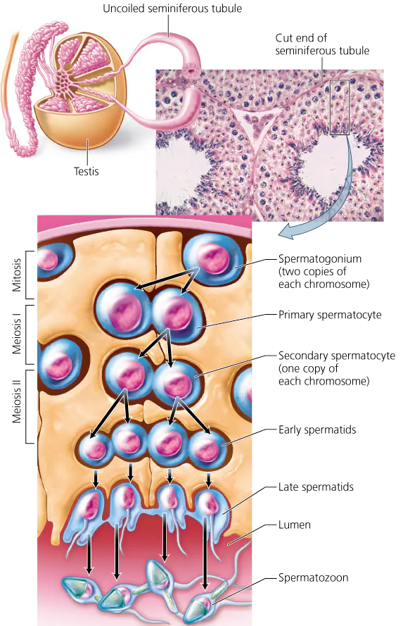

Hormones
- Testosterone (from the interstitial cells) drives sperm production and male development.
- At puberty: the growth spurt (long bones of arms and legs) and enlargement of the testes, penis and other reproductive organs.
- Male secondary sex characteristics — features associated with masculinity but not directly reproductive: muscle and skeletal growth giving wide shoulders and narrow hips; pubic, underarm, facial and perhaps chest hair; a larger voice box and thicker vocal cords, deepening the voice.
- It also generates the sex drive.
- Testosterone loop — held steady by negative feedback among hypothalamus, anterior pituitary and testes:
- the hypothalamus releases gonadotropin-releasing hormone (GnRH);
- GnRH stimulates the anterior pituitary (pea-sized, on the underside of the brain) to secrete luteinizing hormone (LH);
- LH stimulates the interstitial cells to make testosterone — hence its other name, interstitial cell–stimulating hormone (ICSH);
- rising testosterone inhibits GnRH → LH falls → testosterone falls → the inhibition lifts. Net effect: constant testosterone.
- Sperm-production loop — also negative feedback:
- the anterior pituitary's follicle-stimulating hormone (FSH) makes the cells that will become sperm more sensitive to testosterone, by having tubule cells secrete a protein that binds and concentrates it;
- when sperm numbers are high the tubules make inhibin, which inhibits FSH and may also inhibit GnRH → testosterone and sperm production fall → inhibin falls → FSH and GnRH rise and production recovers.


what GnRH makes the anterior pituitary release; the §17.3 text names LH and Table 17.2 says GnRH stimulates release of "LH" only, while Figure 17.5 says GnRH "stimulates release of LH and FSH" and §17.4's text says FSH and LH are both regulated by GnRH "as in the male".
what inhibin inhibits; the §17.3 text says FSH and that it "may" also inhibit GnRH, Table 17.2 says FSH secretion only, and Figure 17.5 says without hedging that "Inhibin inhibits the production of GnRH and FSH".
17.4Form and Function of the Female Reproductive System
pp. 342–347Ovaries, oviducts and uterus
- Components: the ovaries, oviducts, uterus, vagina and external genitalia.
- Ovaries — each about twice the size of an almond, one on each side of the uterus. They produce eggs by oogenesis and produce estrogen and progesterone; the two jobs are intimately related and cyclic.
- Oviducts (fallopian or uterine tubes) — two tubes running from the uterus toward the ovaries but not attached to them; they carry the immature egg, the oocyte, to the uterus.
- The open, funnel-shaped end bears ciliated fingerlike projections draped over the ovary; shortly before release they wave, and their currents and those of the tube's cilia draw the oocyte in.
- Fertilization usually occurs in the oviduct, near the ovary, and the zygote begins developing into an embryo there. Cilia and rhythmic muscle contractions sweep the egg or embryo toward the uterus.
- Uterus — hollow and muscular, about the size and shape of an inverted pear before pregnancy. It receives and nourishes the developing baby — an embryo, then after 8 weeks a fetus — expands about 60 times in pregnancy, and never quite returns to its former size.
- Its smooth muscle layer contracts in waves during childbirth to force the infant out.
- Its lining, the endometrium (endo-, within; metr-, uterus), changes thickness over a cycle of about 1 month. An embryo implants (embeds) in it and is nourished there in early pregnancy; if none forms, it is lost as menstrual flow.
- Ectopic pregnancy — implantation outside the uterus, most often in an oviduct (tubal pregnancy). It cannot go to term and must be ended surgically: the growing embryo eventually ruptures the oviduct, and the mother can bleed to death internally.
Cervix, vagina and external structures
- The cervix, the uterus's narrow neck, projects into the vagina, a muscular tube opening to the outside. The vagina receives the penis; sperm deposited there pass through the cervical opening into the uterus and swim to the oviduct. It is also the birth canal.
- Vulva — the external genitalia. The hair-covered labia majora enclose the thinner labia minora, whose front forms a hood over the clitoris — rich in touch-sensitive nerve endings, with erectile tissue that swells with blood during stimulation and contributes to arousal.
- Breasts (mammary glands) — present in both sexes, make milk only in females: 15–25 groups of milk glands, each drained through the nipple by a milk duct, supported by fibrous connective tissue; most of the breast is fat. Breast cancer is the second leading cause of cancer death in women (see Boxed Essays).
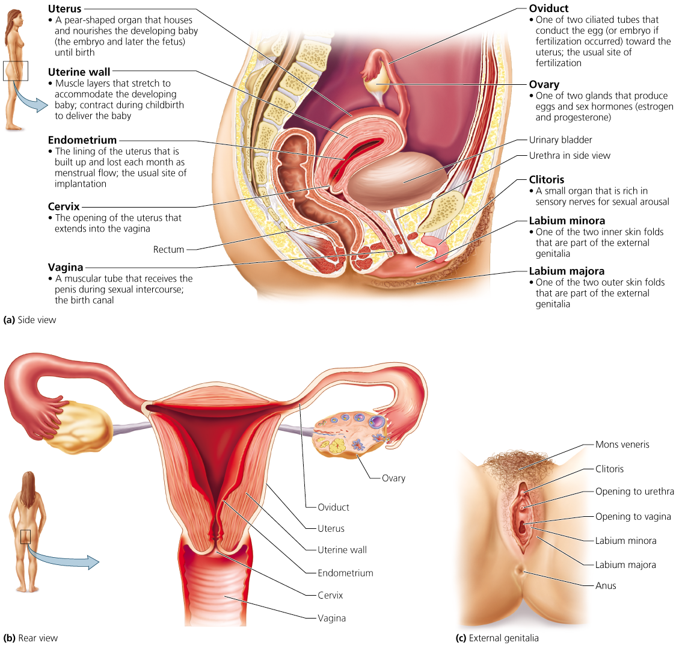
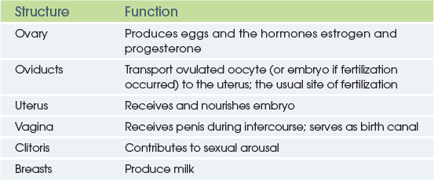


The ovarian cycle
- Ovarian cycle — the roughly monthly cycle of changes in the ovary that produces an egg. Preparation begins before birth:
- in the fetus, diploid oogonia enlarge and store nutrients; some copy their chromosomes and begin meiosis, becoming primary oocytes;
- each is wrapped in one layer of flattened follicle cells — together a primary follicle;
- perhaps 2 million form before birth; about 700,000 remain at birth and 200,000–400,000 at puberty (10–14). Only 400–500 will ever mature.
- The six steps, from puberty:
- (1) Primary follicle develops — usually one a month; its outer cells divide into layers and secrete fluid containing estrogen.
- (2) Follicle matures — fluid collects between the dividing cells, splitting the wall into an inner layer around the oocyte and an outer balloonlike sphere.
- (3) Mature follicle — in 10–14 days it becomes a secondary (Graafian) follicle. The primary oocyte completes meiosis I, dividing unequally into a large secondary oocyte (most of the cytoplasm and nutrients, which will feed the embryo until it reaches the uterus) and a tiny first polar body, which carries off one chromosome set and has no further role.
- (4) Ovulation — about 12 hours later the follicle pops like a blister and releases the oocyte. Only if a sperm penetrates the secondary oocyte does meiosis II finish, dividing it unequally into a second polar body and the mature ovum.
- (5) Corpus luteum forms — LH turns the follicle cells left in the ovary into the corpus luteum ("yellow body"), an endocrine structure secreting estrogen and progesterone.
- (6) Corpus luteum degenerates — unless pregnancy occurs, when the embryo's human chorionic gonadotropin maintains it.
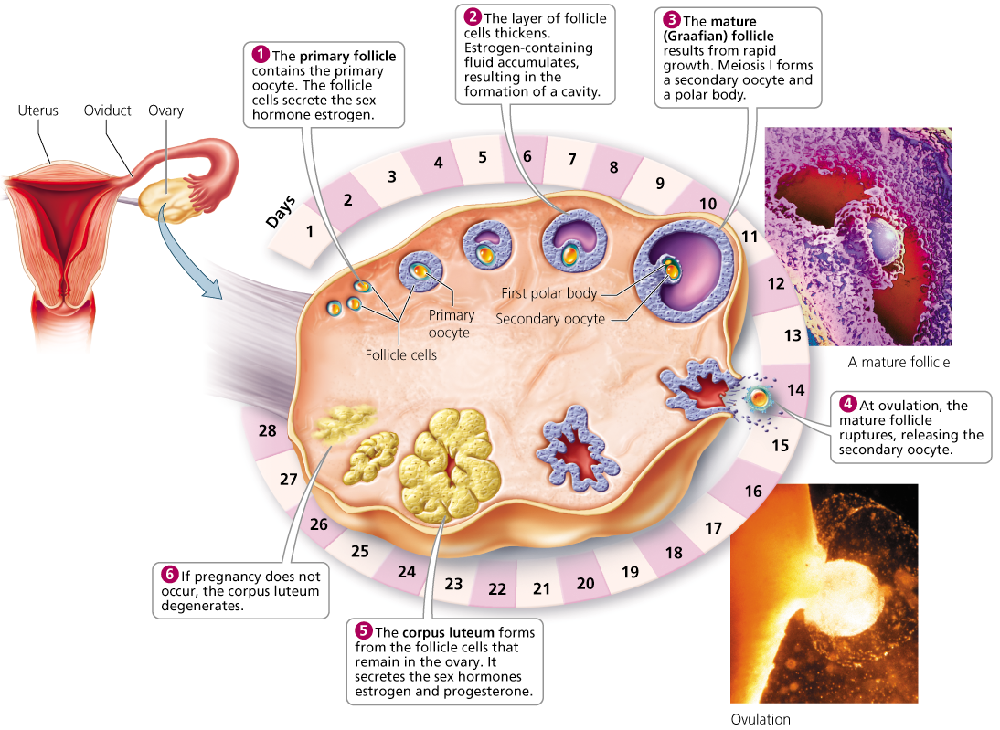
Coordinating the ovarian and uterine cycles
- About monthly an egg matures and is released while the uterus is readied for an embryo; if fertilization fails, the provisions are discarded as menstrual flow. The ovarian events must match the uterine (menstrual) cycle. Length varies between cycles and women; the book uses 28 days.
- The anterior pituitary makes FSH and LH under hypothalamic GnRH; they make the ovary release estrogen and progesterone. Progesterone and estrogen — except at a very high level — feed back negatively on the pituitary, lowering FSH and LH, so the hormones cycle.
- The stages:
- Menstruation — first day of flow is day 1; bleeding averages 5 days. Estrogen and progesterone are at their lowest, so the pituitary releases its hormones, especially FSH, and a new follicle starts developing.
- Endometrium thickens — the follicle's rising estrogen makes endometrial cells divide and store nutrients, and inhibits FSH. Near maturity estrogen rises rapidly and triggers a sudden release of LH (and FSH) — the LH surge.
- Ovulation and the corpus luteum — the LH surge completes the egg's first meiotic division and triggers ovulation; continued LH forms the corpus luteum, which adds progesterone to its estrogen.
- Endometrium prepared for implantation — estrogen and progesterone together raise its blood supply and make uterine glands secrete a nourishing mucous material; they also inhibit FSH and LH, so no new follicles develop.
- Corpus luteum degenerates — without fertilization, in 14 ± 2 days regardless of cycle length; estrogen and progesterone fall.
- Menstruation again — progesterone maintains the endometrium; as it drops, the endometrial vessels collapse and the cells are sloughed off with mucus and blood. FSH and LH climb and the cycle restarts.
- If the egg is fertilized, the embryo's human chorionic gonadotropin (HCG) keeps the corpus luteum alive, so estrogen and progesterone stay high and the lining is not shed. HCG is detectable in blood 7–9 days after implantation and in urine under 2 weeks after, usually before the first missed period. In the second to third month the placenta takes over making estrogen and progesterone and the corpus luteum degenerates.


Menopause
- Fertility peaks in the twenties. By 45–55 few potential eggs remain and they respond less to FSH and LH; estrogen and progesterone fall, cycles become irregular, and ovulation and menstruation stop — menopause.
- Milder effects of low estrogen: loss of an estrogen-promoted fat layer (smaller breasts, wrinkles); hot flashes (estrogen helps regulate the body's thermostat); vaginal dryness and painful intercourse; facial hair as adrenal male hormones predominate.
- Serious effects: higher risk of heart and blood-vessel disease (estrogen protects against atherosclerosis) and osteoporosis (estrogen helps absorb calcium from the gut and deposit it in bone, Ch. 5).
- Hormone replacement therapy (HRT) — estrogen plus progesterone, routine until 2002. It eases hot flashes and dryness and protects against osteoporosis, but a study showed it raises stroke risk; doctors now weigh benefits and risks with each woman.
17.5Disorders of the Female Reproductive System
pp. 348PMS, cramps and endometriosis
- Premenstrual syndrome (PMS) — depression, irritability, fatigue and headaches in some women 7–10 days before the period.
- Some researchers blame a progesterone deficiency: progesterone calms the brain and decreases fluid retention, so as it plummets the nervous system may be stimulated and fluid retained (bloating).
- Severe cases: drugs that raise serotonin (Ch. 7). Milder cases: avoid caffeine, alcohol, fat and sodium; eat more calcium, potassium, manganese and magnesium; aerobic exercise half an hour a day releases enkephalins and endorphins and may help.
- Menstrual cramps — caused mainly by prostaglandins from endometrial cells, which contract the uterine smooth muscle. High levels cause sustained spasms that may cut blood flow, and so oxygen, to the muscle.
- Endometriosis — endometrial tissue outside the uterine cavity, commonly in the oviducts, on the ovaries, or on the outer surface of the uterus, bladder or rectum, having moved out through the oviducts' open ends.
- It grows and breaks down with each cycle's hormonal changes wherever it is, which can cause extreme pain.
- It often makes pregnancy difficult by blocking an oviduct or coating an ovary.
what causes PMS; the §17.5 text names only a progesterone deficiency, with serotonin appearing as a treatment (drugs that raise it), while the chapter summary says PMS "may be caused by low levels of progesterone or of the brain chemical serotonin".
17.6Stages of the Human Sexual Response
pp. 349–350The four stages
- Two basic changes in both sexes: vasocongestion — tissues fill with blood; myotonia — muscles undergo sustained or rhythmic contractions.
- Sexual response cycle — the events accompanying arousal and intercourse, in four stages:
- Excitement — arousal rises during foreplay. Male: blood fills the penis's spongy tissue and it becomes erect. Female: breasts, nipples, labia and clitoris swell with blood; the vaginal walls seep a lubricating fluid. Breathing and heart rate rise.
- Plateau — arousal held high. Male: testes enlarge and are pulled closer to the body. Female: the outer third of the vagina enlarges and the clitoris retracts under its hood. Breathing and heart rate keep rising.
- Orgasm — the brief peak, with muscle contractions of the reproductive structures. Male ejaculation has two stages: glands and ducts contract, forcing sperm and secretions into the urethra; then the urethra contracts and expels the semen. Female: rhythmic contractions of vagina and uterus; absence of orgasm does not affect the ability to become pregnant.
- Resolution — the body slowly returns to normal, usually longer in women. Many women can be aroused again during it; men usually have an interval when another erection or orgasm is impossible.
17.7Birth Control
pp. 351–352Abstinence and sterilization
- Sex risks both pregnancy and STDs (Ch. 17a), so each method is judged on both.
- Abstinence — no sexual contact; the most reliable way to avoid both.
- Sterilization — after abstinence the most effective against pregnancy; no STD protection. Treat it as permanent: reversal is expensive, needs microsurgery and is not guaranteed.
- Vasectomy — each vas deferens is cut, a segment removed and at least one end sealed; about 20 minutes under local anesthesia in a physician's office. Semen volume barely changes, and sex drive is unchanged because the interstitial cells still release testosterone into the blood.
- Tubal ligation — the commonest female method: the oviducts are cut and seared or blocked with clips or rings, often by laparoscopy (two small abdominal incisions, viewed through a telescopic lens), usually under general anesthesia in hospital. Opening the abdomen makes infection risk greater than with vasectomy. Menstruation continues because the ovarian hormones still cycle.
- Lecture The deck: a vasectomy may be reversible; tubal ligation is typically irreversible.
- A newer female method needs no incision: a wire coil or insert placed in the oviducts through vagina, cervix and uterus; over 3 months scar tissue forms around it and blocks sperm.
Hormonal contraception and the IUD
- Hormonal methods — female only; combination or progesterone-only.
- Combination methods — synthetic estrogen and progesterone suppress FSH and LH, so no egg matures or is released.
- The pill — hormone pills for 3 weeks, then a hormone-free week. The skin patch (Ortho Evra) and vaginal ring (NuvaRing) release hormones for the 3 weeks they are in place; menstruation comes in the hormone-free week.
- Seasonale and Seasonique — 84 days of hormones then a week off: four periods a year. Lybrel — taken continuously: one a year.
- Extremely safe for most healthy nonsmoking women under 35. Risk rises with age and smoking, which raise blood pressure and the risk of abnormal blood clots — together more than either alone. Most pill-associated deaths are heart attack or stroke from clots.
- They raise STD risk: the vagina becomes more alkaline, favouring the bacteria of gonorrhea and chlamydia, and delicate cells of the cervical canal migrate to the cervix's exposed surface.
- Progesterone-only methods — the Depo-Provera injection every 3 months (the most popular, extremely effective), the minipill, a progesterone-releasing IUD, and the Implanon/Nexplanon implant, a matchstick-sized rod under the skin of the upper arm lasting 3 years.
- They may prevent ovulation, thicken cervical mucus and, with no estrogen, leave the endometrium unprepared for implantation. No STD protection.
- Intrauterine device (IUD) — placed in the uterus by a physician, can stay several years; highly effective, interfering with fertilization and implantation. No STD protection. A possible male equivalent, the Intra Vas Device, plugs the vas deferens.
Barriers, spermicides and timing
- Barrier methods keep egg and sperm apart.
- Diaphragm — a dome-shaped rubber cup with a flexible ring, inserted before intercourse to cover the cervix, with spermicide on its inner surface. Gives some, limited protection against chlamydia and gonorrhea, and by shielding the cervix from the genital-wart virus lessens cervical-cancer risk.
- Cervical cap (FemCap) — smaller, fits snugly over the cervix, used with spermicide; no STD protection.
- Contraceptive sponge — no prescription needed: a spermicide sponge with a cervical indentation and a removal strap; moistened to activate; protects for 24 hours.
- Male condom — a sheath of latex, polyurethane or natural membrane rolled onto the erect penis; effectiveness depends largely on consistent use. After abstinence the latex condom is the best STD protection: "skin" condoms let some microorganisms, especially viruses, through, while latex has no pores. It protects only the surfaces it separates.
- Female condom — a loose polyurethane sac with a ring at each end; reduces STD risk for women who cannot count on a partner to use a condom.
- Spermicides — nonoxynol-9 in foam, cream, jelly, film or tablet; alone, foams work best; effect lasts about 1 hour. It kills many STD organisms in the lab but damages vaginal lining cells, which could raise STD susceptibility.
- Fertility awareness (natural family planning, rhythm method) — avoiding intercourse on fertile days. Sperm live 2–5 days in the female tract (the lower value likelier) and the egg 12–24 hours after ovulation, giving about 4 fertile days; which four is hard to predict. Tracked by calendar, body temperature or cervical mucus, all needing training.
- Emergency contraception ("morning-after pill") — after unprotected intercourse. Preven (estrogen + progesterone) and Plan B (progesterone only): first dose within 3–5 days, second 12 hours later. May inhibit or delay ovulation, prevent fertilization, thicken cervical mucus or make the endometrium inhospitable to implantation. Plan B is over the counter at 18 or older.
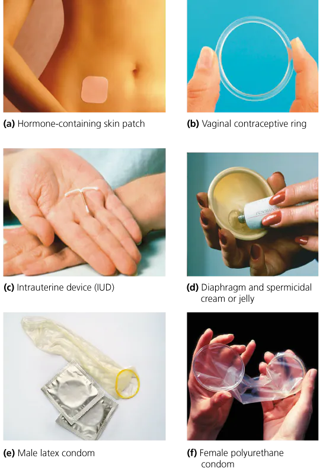
Stop And Think
1Why can't Viagra, Levitra or Cialis cause an erection in a man who is not sexually aroused? (§17.3, p. 340)
They prolong the effect of nitric oxide, which is released only on arousal; with no arousal there is nothing to prolong, so the penile arterioles do not widen.
2Anabolic steroids mimic testosterone; a side effect of abuse is shrinking testes. How can this be explained? (§17.3, p. 341)
The steroid feeds back negatively on the hypothalamus, cutting GnRH and so LH (and FSH); the interstitial cells and sperm production lose their stimulus and the testes shrink. The book does not answer this directly; this applies its feedback loop.
3Fertility clinics may give FSH to women having trouble getting pregnant. Why would FSH help, and why would treated women be more likely to have multiple births? (§17.4, p. 345)
FSH stimulates follicle development, promoting egg maturation and ovulation. Normally about one follicle a month develops; extra FSH can mature several at once, releasing several eggs that can each be fertilized.
4A latex condom is an impenetrable barrier, yet women who use a diaphragm or sponge routinely have lower STD rates than women who rely on male partners to use a condom. What might explain this? (§17.7, p. 352)
Condom protection depends on consistent use, which the woman relying on her partner does not control; a diaphragm or sponge is under her own control, and the diaphragm gives some protection against chlamydia and gonorrhea. The book does not answer this directly.
Figure Questions
1Couples trying to conceive can buy kits to predict ovulation. Which hormone would be the best predictor of ovulation, and why? (Figure 17.9, §17.4)
LH — the LH surge triggers ovulation, so a sharp rise in LH signals that ovulation is about to happen.
End Of Chapter Questions
1The interstitial cells
a) are found in the seminal vesicles. b) produce a secretion that makes up most of the volume of semen. c) secrete testosterone. d) store sperm.
c
They lie between the seminiferous tubules and make testosterone. b describes the seminal vesicles (Table 17.1).
2Choose the incorrect statement about semen.
a) It helps lubricate passageways in the male reproductive system, so sperm travel through them more easily. b) Sperm cells make up most of the volume of semen. c) It helps reduce the acidity of the female reproductive system, thereby increasing sperm survival. d) It contains nourishment for the sperm.
b
Sperm are very little of semen's volume. c is true — prostate secretions counter female-tract acidity.
3After sperm are released in the female reproductive system they can move to the egg and fertilize it. Which is the correct order of structures through which the sperm will pass?
a) vagina, cervix, body of uterus, oviduct b) ovary, cervix, body of uterus, oviduct c) endometrium, cervix, oviduct, ovary d) ovary, oviduct, endometrium, cervix
a
Vagina → cervical opening → uterus → oviduct, where fertilization usually occurs. b and d start at the ovary, which sperm never pass through.
4An injection of LH might
a) trigger ovulation. b) cause menstruation. c) cause breast development. d) cause a miscarriage.
a
The LH surge triggers ovulation. Menstruation (b) follows a fall in progesterone.
5Which of the following structures is incorrectly paired with its function?
a) prostate gland: adds alkaline fluid to sperm b) seminiferous tubules: secrete testosterone c) epididymis: provides for storage and maturation of sperm d) ovary: secretes estrogen and progesterone
b
Seminiferous tubules make sperm; testosterone comes from the interstitial cells between them. a, c and d are correct pairings.
6A zygote
a) is the cell formed when the sperm fertilizes the egg. b) will develop into a gamete. c) contains one complete set of chromosomes. d) usually forms in the endometrium.
a
The zygote is the cell fertilization creates. c describes a gamete — the zygote has two sets.
7Choose the incorrect statement about the endometrium.
a) It is the part of the uterus that is lost each month as a portion of the menstrual flow. b) It is where fertilization usually takes place. c) It nourishes the young embryo. d) It is where the embryo usually implants.
b
Fertilization usually occurs in the oviduct. d is true — the endometrium is the implantation site.
8Which of the following is the correct pairing of a structure with its function?
a) endometrium: the usual site of fertilization b) corpus luteum: production of estrogen and progesterone c) epididymis: production of testosterone d) seminal vesicles: storage of sperm while they mature
b
The corpus luteum secretes estrogen and progesterone. d belongs to the epididymis, not the seminal vesicles.
9Mifepristone (formerly RU486) terminates a pregnancy by preventing progesterone from acting. This would cause an abortion because progesterone is needed to
a) trigger ovulation. b) cause the formation of the corpus luteum. c) maintain the endometrium. d) increase the levels of LH.
c
Progesterone maintains the endometrium; without it the lining is shed. a and b are LH's jobs.
10Sperm are stored and mature in the ______.
epididymis
§17.3, Table 17.1.
11Fertilization usually occurs in the ______.
oviduct
§17.4 — near the ovary (Table 17.3, Figure 17.6). Applying the Concepts — three open questions, p. 355, numbered on.
12A healthy 22-year-old nonsmoker is about to marry; neither she nor her fiancé has had other partners. They want very effective contraception until he finishes graduate school. Which method would you recommend, and why?
A hormonal method (combination pill, patch or ring, or a progesterone injection or implant) or an IUD.
All are very effective and reversible, and combination methods are extremely safe for healthy nonsmokers under 35; sterilization is permanent, and with no other partners the lack of STD protection matters less (§17.7). The book gives no single answer.
13Endometriosis causes pelvic pain. Why would the pain be greatest around menstruation?
The stray endometrial tissue grows and breaks down with the cycle's hormonal changes, just as the uterine lining does.
§17.5 — the breakdown comes as estrogen and progesterone fall at menstruation.
14A friend and his wife are having trouble conceiving because of his low sperm count. The doctor first suggests loose clothing and boxer shorts instead of tight briefs. Why?
To keep the testes cooler.
§17.3 — the scrotum's lower temperature is important for healthy sperm; tight briefs hold the testes against body heat.
Boxed essays
Breast Cancer (§17.4, pp. 342-347)
- Usually begins with abnormal growth of the cells lining the milk ducts, sometimes the milk glands; some types aggressively invade nearby tissue.
- Cells typically start to spread when the tumor is about 20 mm (¾ in.) across: they break into the breast's connective tissue, then may enter lymphatic or blood vessels and travel through the body.
- Detection — a monthly breast self-exam, begun in early adulthood, finds lumps early and teaches a woman her normal tissue (Figure 17.A). Mammograms (x-rays of breast tissue) reveal tumors too small to feel; a palpable tumor holds a billion or more cells, some possibly already spread, and survival falls sharply once cells spread. Small tumors may need only a lumpectomy (removes the lump); later stages a mastectomy (removes the breast).
- Unalterable risks — gender most of all; inherited BRCA1 or BRCA2 mutations (in only 5–10% of cases, but up to an 85% lifetime chance for carriers).
- Estrogen exposure is the common thread: each cycle estrogen makes breast cells divide, and more lifetime ovulations mean more exposure. Risk rises with early first menstruation, menopause after 55, childlessness or a first pregnancy after 30, and obesity (fat cells make estrogen; fat above the waist triples risk). Breast-feeding protects (20% lower risk before menopause) by blocking ovulation and keeping breast tissue differentiated; exercise can suppress ovulation in young women.
- Questions: federal guidelines no longer recommend routine mammograms over 40, while the American Cancer Society says they reduce mastectomies and deaths — would you recommend them? Preventive mastectomy for gene carriers?
Environmental estrogens (§17.4, p. 347)
- Estrogen-mimicking chemicals pollute the environment and could disrupt human reproduction; effects on other species are clear, the threat to humans is not. IUPAC recommends costly research and monitoring — would you pay for it as a taxpayer?
Brianna's endometriosis (§17.7, p. 352)
- Brianna has extreme pelvic pain with her periods, diagnosed as endometriosis. Why is the pain worst during her period, and why is its exact site hard to identify?
- The stray tissue grows and breaks down with each cycle like the uterine lining, so it hurts most at menstruation; and it can sit in several places — oviducts, ovaries, outer surfaces of uterus, bladder or rectum — so the pain can come from more than one site. (The book does not discuss locating pain.)
Pesticide residues and semen quality (p. 355)
- A 2015 Harvard T. H. Chan School of Public Health release: 155 men at a Boston fertility centre, 338 semen samples (2007–2012), diet surveys classing produce as high or low-to-moderate in pesticide residue, adjusted for smoking and body mass index.
- Men eating the most high-residue produce (over 1.5 servings a day) had a 49% lower sperm count and 32% lower percentage of normal sperm than those eating the least (under 0.5 a day).
- Questions: what was the variable? Does it support telling men to stop eating fruit and vegetables? Find three reliable sources on environmental factors in sperm development.
Chapter 17a — Special Topic — Sexually Transmitted Diseases and AIDS
Captured from the Pearson eText. pp. 356–365.
- 17a.1 Long-Lasting Effects of STDs and STIs
- 17a.2 STDs Caused by Bacteria
- 17a.3 STDs Caused by Viruses
- 17a.4 HIV/AIDS
Did you know
- More than 1.2 million people in the US are living with HIV/AIDS, and about 1 in 7 (14%) do not know they are infected (CDC).
- Diagnosing and treating STDs costs about $16 billion a year in the US.
Opening
Ch. 17 covered the reproductive systems and how well birth control prevents pregnancy and sexually transmitted diseases (STDs). Ch. 17a covers three STDs caused by bacteria — chlamydia, gonorrhea, syphilis — and three caused by viruses — genital herpes, genital warts, HIV/AIDS. HIV is here because sexual contact is its most common route, though not its only one. (p. 356)
The chapter as one chain
- STDs are common and often silent, and women are hit harder.
- Bacterial STDs are curable — but untreated chlamydia and gonorrhea scar the reproductive tubes, and syphilis advances through three stages.
- Viral STDs are treatable, not curable — herpes recurs from ganglia; HPV causes warts or cancer, and a vaccine prevents it.
- HIV is a retrovirus that targets helper T cells — in through CD4, RNA copied to DNA, integrated as a provirus.
- Infection runs in stages — T cells fall as viral load rises, ending in AIDS.
- Drugs block replication, not the provirus — so they control HIV without curing it.
What to focus on
No slides for 17a — the Ch. 17 deck stops at birth control. Whalen's objectives, from BIO 5 Study Guide CH 17.docx (one guide for Ch. 17 and 17a):
- The bacterial STDs — chlamydia, gonorrhea, syphilis: causative agent, symptoms and treatment.
- The viral STDs — herpes, HPV, HIV: causative agent, symptoms and treatment.
- The relationship of HIV and AIDS; AIDS.
17a.1Long-Lasting Effects of STDs and STIs
pp. 357How common STDs are
- Sexually transmitted diseases (STDs) harm the infected and cost society: about 19 million US infections a year, two-thirds in people under 25, costing billions to treat.
- Most common among adolescents and young adults (14–26), the most sexually active group:
- 26% of females aged 14–19 have at least one STD; 15% have more than one.
- 20.1% of females with only one lifetime partner (so far) have had one; 50% or more with three or more partners have one.
- The most common STD is genital infection with human papilloma virus (HPV).
which STD is the most common; §17a.1 (p. 357) says the most common STD is genital HPV infection, while §17a.3 (p. 360) says chlamydia "holds the title" of most common STD in the US, with HPV the most common viral STD, and §17a.2 (p. 358) calls chlamydia the most frequently reported infectious disease in the US. The book does not reconcile them; "most reported" vs "most prevalent" is a possible reading the book never states.
Why they spread, and who suffers most
- Many infected people have no symptoms, and some STDs' symptoms, such as syphilis's, disappear untreated, so the person wrongly believes he or she is cured. Hence some authorities prefer sexually transmitted infection (STI).
- STDs affect women more severely: women expose more vulnerable surface area (mucous membranes), and are less likely to develop symptoms that prompt treatment.
17a.2STDs Caused by Bacteria
pp. 358–359Chlamydia and gonorrhea — organisms and spread
- Chlamydia — the most frequently reported infectious disease in the US; caused by Chlamydia trachomatis, a very small bacterium that cannot grow outside a human cell.
- Becoming epidemic: highly contagious, and most people with it have no symptoms — many learn of it only from a diagnosed partner. Symptoms may take weeks or months to appear, and meanwhile it spreads.
- Gonorrhea — one of the oldest known STDs; caused by Neisseria gonorrhoeae.
- Both infect the mucous membranes of the genital or urinary tract, throat or anus. The bacteria cannot survive long in air, so they pass by direct contact between infected and uninfected membranes during intimacy.
- Susceptible: urethra, vagina, cervix, oviducts, throat, anus, eyes — most often the urethra or reproductive structures, the ones most likely to touch.
- Reach the anus by anal intercourse, the throat by oral sex, the eyes by a contaminated finger, and an infant's eyes during birth through the vagina or cervix.
when chlamydia symptoms first appear; the §17a.2 text (p. 358) says symptoms "may take weeks or months to appear," while Table 17a.1 (p. 359) says first symptoms occur 7–21 days after contact — three weeks at most, never "months."
whether most people with chlamydia are symptom-free; the §17a.2 text (p. 358) says most people with chlamydia have no symptoms, while Table 17a.1 says up to 75% of women and 50% of men show none — so at most half of men. The two fit for people overall, weighted by women, but the table does not support "most" for men.
Symptoms — men and women
- The most common symptoms of both are those of a urinary tract infection (UTI): an inflamed urethra causes burning on urination, itching or burning at the opening, and a discharge. In males the usual site is the urethra.
- In women both more often infect the pelvic organs, since the vagina and cervix are the main contact sites.
- Pelvic inflammatory disease (PID) — any infection of the pelvic organs; chlamydia and gonorrhea bacteria are the most common causes. Symptoms: abdominal pain or tenderness, lower-back pain, painful intercourse, abnormal vaginal bleeding or discharge, fever or chills — gradual or sudden, mild to severe.
- Spread: vagina → cervix → uterus (may infect the endometrium) → uterine wall → oviducts; near the ovary the oviduct opens to the abdominal cavity, so infection can reach it.
- Antibiotics cure it, but pelvic infections cause symptoms less often than UTIs, so untreated infection may permanently damage the reproductive system.

Scarring, sterility and ectopic pregnancy
- Men more often notice symptoms and get treated before lasting damage; a diagnosed man should inform every partner.
- Untreated, both infections can scar the tubes that carry gametes. Complete blockage of the vasa deferentia or oviducts causes sterility — likelier in women, who less often have symptoms that prompt treatment.
- A partly blocked oviduct may let the small sperm through to fertilize the egg but not the larger embryo back to the uterus; the embryo implants in the oviduct — an ectopic pregnancy, which endangers the woman's life.
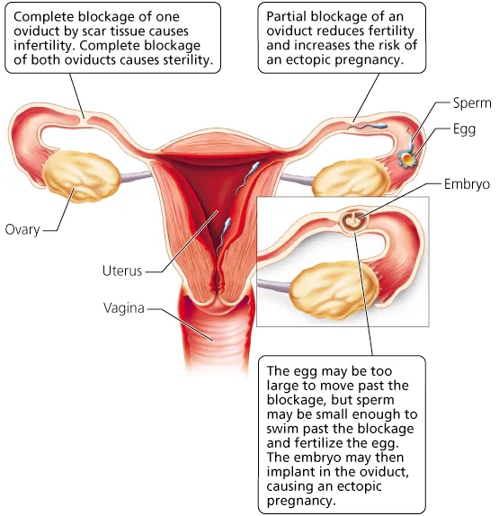
Newborns, diagnosis and treatment
- Newborns can catch either bacterium passing through an infected cervix or vagina; it can infect the conjunctiva (the eye's mucous membrane), throat, vagina, rectum or lungs, sometimes fatally. Chlamydia in pregnancy can also rupture the fetal membranes early, which can kill the fetus.
- Diagnosis: office urine tests detect Chlamydia or gonococcal DNA; gonorrhea also by a smear of cells from the infected area, or lab culture.
- Treatment: antibiotics cure both. Some gonococcal strains are resistant, so every treated gonorrhea patient must be retested to confirm cure.
Syphilis
- Syphilis — caused by a corkscrew-shaped bacterium (a spirochete), Treponema pallidum. Rates fell through the 1990s to a low in 2000 and have risen slightly since, mainly among men who have sex with men.
- The bacteria cannot survive drying or even minor temperature changes, so syphilis passes only by direct contact with an infected partner, through any mucous membrane or a break in the skin. In pregnancy it can cross the placenta to the fetus.
- Untreated, it passes through three stages; each stage's symptoms fade on their own:
- Stage 1 — a painless, hard, reddish brown, crater-edged bump, the chancre, forms at the contact site (usually the genitals) 2–8 weeks after contact. Often unnoticed, it lasts one to a few weeks, ulcerates, crusts and disappears — but the disease has not. Diagnosed from bacteria in the chancre's discharge; curable with an antibiotic such as penicillin.
- Stage 2 — a painless, non-itchy reddish brown rash over the whole body, palms and soles included, a few weeks to months after the chancre goes. Each bump oozes and crusts, and the ooze holds millions of bacteria: the most contagious stage. Diagnosed by a blood test for antibodies to Treponema; still curable, but harder to treat as it progresses. Symptoms go away treated or not, may recur periodically, or show no sign for years.
- Stage 3 — lesions called gummas on the skin or internal organs. On the aorta they weaken the wall until it may burst, and the person bleeds to death internally. Infection of the brain and spinal cord causes difficulty walking, paralysis or insanity; of the eye, blindness. Treatment takes massive antibiotic doses over a long period, and existing damage cannot be repaired.


| Disease | Symptoms | Diagnosis and treatment | Effects |
|---|---|---|---|
| Chlamydia | First symptoms 7–21 days after contact. Up to 75% of women and 50% of men show none. Women: vaginal discharge; bleeding between periods; pain during urination and intercourse; abdominal pain with fever and nausea. Men: urethral discharge; pain during urination. | Diagnosis: urine test for chlamydial DNA. Treatment: antibiotics. | Long-term reproductive consequences, such as sterility; infection can pass to infant during childbirth; can rupture the protective membrane around the fetus. |
| Gonorrhea | First symptoms 2–21 days after contact. About 30%–40% of men and women show none. Women: vaginal discharge; pain during urination and bowel movement; cramps and lower abdominal pain; more menstrual pain than usual. Men: thick yellow or white penile discharge; inflamed urethra; pain during urination and bowel movements. | Diagnosis: examination of penile discharge or cervical secretions; urine test for the bacterium's DNA; cell culture. Treatment: antibiotics. | Long-term reproductive consequences, such as sterility; infection can pass to infant during childbirth; can cause heart trouble, arthritis and blindness. |
| Syphilis | Stage 1: 2–8 weeks after contact; chancre at site of contact; groin lymph nodes swell. Stage 2: 6 weeks to 6 months after contact; reddish brown rash anywhere on the body; flu-like symptoms; ulcers or warty growths; patchy hair loss. Stage 3: lesions on skin and internal organs; may affect nervous system; blindness; brain damage. | Diagnosis: bacterium identified from a chancre; blood test for antibodies to the bacterium. Treatment: large doses of antibiotics over a prolonged period. | Infection can pass to fetus during pregnancy; can cause heart disease, brain damage, blindness and death. |
17a.3STDs Caused by Viruses
pp. 360–361Genital herpes
- Viral STDs cannot be cured with antibiotics. Symptoms can be treated, but one can never be sure the virus is gone, so always take precautions not to pass it on.
- Genital herpes — caused by herpes simplex viruses (HSVs), two types causing similar sores in different regions: HSV-1 usually above the waist (fever blisters, cold sores), HSV-2 usually below it (genital herpes on the genitals, buttocks or thighs). Through oral–genital sex, HSV-1 can cause genital sores and HSV-2 cold sores.
- Quite contagious, by direct contact with virus shed from an infected surface or in blister fluid. Mucous membranes are most susceptible; skin is a good barrier unless broken (cut, abrasion, burn, acne, eczema).
- An outbreak — first signs 2–20 days after contact (average 6). A first bout may be severe: fever, aching muscles, swollen groin glands. Blisters form at the contact site with swelling, itching and possibly burning (especially if wet with urine); after about 2 days they ulcerate into small, painful sores. Open sores raise the risk of acquiring HIV on exposure.
- Latency — between outbreaks the virus retreats to ganglia (clusters of nerve cells) near the spinal cord; emotional or physical stress may reactivate it.
- Silent spread — most people with herpes apparently never have symptoms, or too mild to notice, yet can transmit it; most genital herpes comes from partners who never had symptoms, or had atypical, undiagnosed ones. It is most contagious with active sores: avoid sex during an outbreak, and unprotected sex always.
- Pregnancy — most women with herpes have normal pregnancies and deliveries. Rarely it reaches the fetus, causing miscarriage or stillbirth; it can also pass to the newborn in vaginal delivery, especially with active sores, so a cesarean section (surgical removal from the uterus) is often advised if the mother has active sores or is shedding virus.
- Diagnosis — examining sores; testing sore fluid for virus; finding herpes DNA in a gentle genital swab; antibody blood tests, though antibodies can take several months to appear, so these may not help in a first attack.
- Treatment — no cure. Antivirals Zovirax, Famvir and Valtrex ease a first outbreak and reduce recurrences; drug-resistant strains are beginning to appear.

HPV and genital warts
- Genital warts — caused by any of several human papilloma viruses (HPVs), not those that cause warts on hands and feet.
- HPV is the most common viral STD. About 50% of sexually active people will be infected at some point; the body's defences usually eliminate it without serious harm.
- Most carriers have no symptoms and do not know it, but it spreads by genital contact anyway: as in Ch. 13a, viruses can be released slowly from host cells without symptoms, infecting other sites or a partner.
- Low-risk strains cause warts — flat or raised, single or grouped, often growing untreated, and often hidden in the vagina, cervix or anus.
- Diagnosed by appearance; flat warts usually show only when painted with a vinegar-like solution. In women a Pap test — a painless cervical swab examined under a microscope — detects precancerous cells.
- Treatment kills virus-containing cells: freezing (cold cautery), burning with an electrical instrument (hot cautery), laser or surgery; creams shrink warts by boosting body defences. HPV can survive in nearby normal-looking tissue and cause new warts weeks or months later.
- High-risk strains cause persistent infections closely linked to cervical cancer and penile cancer.
- HPV is thought to cause one-third of US penile cancers and is found in 90% of women with cervical cancer, so women should have regular Pap tests — at least yearly for anyone who has ever had HPV.
- HPV can also cause oral cancer (by oral sex) and anal cancer (by anal intercourse).
- Vaccines — Gardasil and Cervarix protect against several HPV types, including the two strains behind most cervical cancer. Recommended for girls aged 10–12 and (Gardasil) boys aged 11–12, against warts and HPV-related cancers.
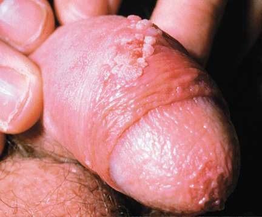
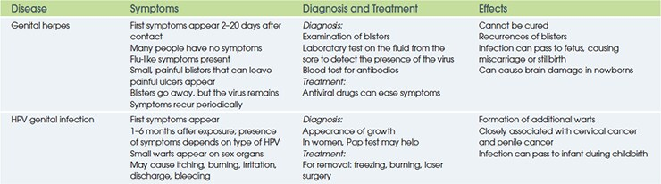
| Disease | Symptoms | Diagnosis and treatment | Effects |
|---|---|---|---|
| Genital herpes | First symptoms 2–20 days after contact. Many people have none. Flu-like symptoms; small painful blisters that can leave painful ulcers; blisters go away but the virus remains; symptoms recur periodically. | Diagnosis: examination of blisters; lab test of sore fluid for the virus; blood test for antibodies. Treatment: antiviral drugs can ease symptoms. | Cannot be cured; recurring blisters; infection can pass to fetus, causing miscarriage or stillbirth; can cause brain damage in newborns. |
| HPV genital infection | First symptoms 1–6 months after exposure; whether there are symptoms depends on HPV type. Small warts on sex organs; may cause itching, burning, irritation, discharge, bleeding. | Diagnosis: appearance of growth; in women, a Pap test may help. Treatment: removal by freezing, burning, laser surgery. | More warts form; closely associated with cervical and penile cancer; infection can pass to infant during childbirth. |
17a.4HIV/AIDS
pp. 362–365AIDS and its target
- Acquired immune deficiency syndrome (AIDS) — its symptoms are those of a damaged immune system; it is acquired, not inherited, unlike many immune deficiencies; and a syndrome is a set of symptoms that tend to occur together.
- Caused by the human immunodeficiency virus (HIV); AIDS is the final stage of an infection that slowly weakens the immune system.
- A primary target is the helper T cell, the main switch for the entire immune response (Ch. 13). Infected T cells work poorly and are eventually killed, letting organisms that routinely surround us cause opportunistic infections — the infections that characterize AIDS and in time kill.
- A pandemic: WHO estimated about 35 million people living with HIV in 2015, two-thirds in sub-Saharan Africa.
Structure of HIV
- Genetic material is RNA. RNA and several virus-specified enzymes sit inside a protein coat; RNA and coat form the core.
- Around it, an envelope: protein spikes in a lipid membrane — plasma membrane stolen from the previous host cell and altered by the virus. The spikes bind the virus to the host cell.

Replication of HIV
- The steps matter because the drugs target them: 1. The tip of a spike fits a host receptor like a key in a lock. The receptor is the surface protein CD4; helper T cells carry the most, so they are HIV's commonest target. 2. Docked, the virus releases its contents into the cell. 3. The protein coat breaks down, freeing HIV's RNA and the enzyme reverse transcriptase into the cytoplasm. 4. Reverse transcriptase rewrites the RNA as double-stranded DNA. RNA → DNA reverses the usual flow of genetic information, so such viruses are retroviruses (retro-, backward). 5. The viral DNA is spliced into the host DNA as the HIV provirus, which the cell copies as its own genes each time it reproduces. HIV usually passes between people as a latent provirus inside an infected cell, and it can sit in a helper T cell for years until the cell is activated against some antigen (a virus, fungus or parasite) — then the virus copies itself instead of letting the cell fight. 6. The activated viral genome makes the cell a virus factory: new HIV RNA serves as genetic material for new viruses and as the template for viral proteins. 7. Viral components gather at the membrane and bud off. 8. HIV RNA and proteins self-assemble into mature viruses, which travel in the blood to infect new cells.

Transmission and sites of infection
- HIV is in blood, semen, vaginal secretions, breast milk, saliva, tears, urine, cerebrospinal fluid and amniotic fluid, but only the first four carry enough to infect. It is not transmitted by casual contact. Major modes:
- Unprotected sex of any kind — broken skin or mucous membranes of the vagina, vulva, penis, mouth or anus not separated by a barrier such as a latex condom.
- Intravenous drug use — infected blood. Donated blood has been tested since 1985, essentially ending transfusion risk; needle-sharing remains a risk, and in 2015 infections rose with IV prescription painkillers and heroin.
- Mother to offspring — across the placenta, at delivery, or in breast milk: about 25% for an untreated mother who does not breast-feed, under 2% with antiretroviral drugs.
- HIV infects any cell with a CD4 receptor; the most important is the helper T cell, and the hallmark of infection is their progressive decline.
- HIV also kills brain cells: forgetfulness, impaired speech, poor concentration, depression, seizures, personality changes. About 60% of people with AIDS show dementia.
Stages of infection
- Progress is tracked by falling helper T cells and rising viral load (the number of HIV free in the blood).
- Initial infection — HIV replicates actively. Antibodies usually appear within about 8 weeks, sometimes not for months or years; an HIV test detects them, making the person HIV-positive. Symptoms are absent or mild (enlarged lymph nodes, fatigue, fever; with brain infection, headaches and trouble concentrating, remembering or solving problems). People are often unaware yet particularly contagious.
- Asymptomatic stage — the person usually feels well, often for several years. The immune system controls but does not conquer HIV: T cell production rises and for a while matches destruction. HIV hides in lymphatic organs — spleen, tonsils, adenoids and above all the lymph nodes, where most helper T cells live — replicating there and infecting millions of T cells as they circulate through.
- Initial disease symptoms — as T cells drop, three classes appear: wasting syndrome (unexplained loss of more than 10% of body weight, often with diarrhea); swollen lymph nodes in neck, armpits and groin; and neurological symptoms (dementia, weakness, paralysis from spinal cord damage, and pain, burning or tingling in hands or feet from peripheral nerve damage).
- Early immune failure — infections increase; early signs are thrush (a fungal mouth infection) and shingles (a painful rash from the chickenpox virus).
- AIDS — the final stage, 10 or more years after infection depending on other infections and prior immune health; the person is open to characteristic fungal, protozoan, bacterial and viral infections and cancers. Diagnosed when an HIV-positive person has any one of: 1. helper T cells below 200 per mm³ of blood; 2. one of 26 opportunistic infections — most often Pneumocystis jiroveci pneumonia and Kaposi's sarcoma (a connective-tissue cancer mainly of the skin); 3. more than 10% loss of body weight; 4. dementia.

Treatment and prevention
- Death in AIDS usually comes from an opportunistic infection, so treating or preventing them lengthens life. Treatment also slows HIV's replication, before and after diagnosis; each antiretroviral drug class blocks one step of Figure 17a.7:
- entry inhibitors (step 1) block the surface proteins that bind CD4;
- fusion inhibitors (step 2) stop HIV fusing with the host membrane;
- reverse transcriptase drugs (step 4) — the original class, AZT, ddI, ddC;
- integrase inhibitors (step 6, by the treatment text) stop HIV DNA inserting into the host chromosome, which new HIV RNA and components depend on;
- protease inhibitors (step 6) — the first viral proteins are too big and must be cut to size by the enzyme protease; these block it.
- Highly active antiretroviral therapy (HAART) — a "drug cocktail" from at least two classes, to minimize resistance. It prolongs lives and can cut viral load to undetectable levels, but is not a cure: stop it and HIV can leave latency and replicate again.
- Newer regimens: as little as one pill a day, fewer side effects (better adherence), and an earlier start, before symptoms, to limit immune damage. Undetectable viral load decreases, but does not eliminate, the chance of sexual transmission.
- Prevention — the best defence is avoiding infection, by avoiding high-risk behaviour (unprotected sex, IV drug use). A vaccine would work as for smallpox and measles (Ch. 13), and many are in trials, but four features of HIV have thwarted one:
- a very high mutation rate, especially in the outer coat proteins antibodies must recognize;
- two types of HIV and many strains, so antibodies must match the exact strain;
- latency — as a provirus, HIV is hidden from antibodies;
- cell-to-cell spread directly into adjacent cells, where antibodies, which act only outside cells, cannot reach it.
- Ch. 18 turns to development and aging, from fertilization to old age.
which replication step integrase inhibitors block; the Treatments text (p. 364) says integrase inhibitors block step 6, preventing HIV DNA from inserting into the host chromosome, while Figure 17a.7 (p. 362) — and the text's own replication walk-through — number that insertion as step 5, with step 6 the making of HIV RNA and proteins.
Stop And Think
1Hospitals do not isolate patients with HIV unless they also have another infectious disease. Why is this safe? (§17a.4, p. 363)
HIV is not transmitted by casual contact. Only blood, semen, vaginal secretions and breast milk carry enough virus to infect, by unprotected sex, infected blood (shared needles) or mother to child; ordinary contact with a patient involves none of these.
2Anti-HIV drugs stop or slow replication but do not act on HIV once it is incorporated into the host chromosome. Why must treatment continue for life? (§17a.4, p. 364)
The provirus stays latent in the host DNA and is copied each time the cell divides; the drugs cannot remove it. If treatment stops, HIV can leave the latent state and replicate again — HAART is not a cure.
Figure Questions
1Why is the insertion of HIV DNA into the host cell chromosome so important to HIV's replication? (Figure 17a.7, §17a.4)
Once integrated, the provirus is treated as the cell's own genes — copied every time the cell reproduces and, when the cell is activated, used to make new HIV RNA and proteins. It is the step that turns the cell into a virus factory, and it lets HIV lie latent, out of reach of antibodies and drugs.
Boxed essays
Lawsuits for transmitting an STD (§17a.3, p. 361)
- Should a person be allowed to sue someone for transmitting an STD? As a juror, what factors would influence your decision?
- Relevant from the chapter: many people with STDs have no symptoms and do not know they are infected (§17a.1), and most genital herpes is transmitted by partners who never had symptoms (§17a.3).
Casey and Mike's infertility (§17a.4, p. 365)
- Casey and Mike have tried for 3 years to start a family. A blood test shows Casey has antibodies to the bacteria that cause chlamydia; she denies ever having had symptoms. Could chlamydia explain the infertility?
- Yes (§17a.2): most people with chlamydia have no symptoms, and in women it more often causes silent pelvic infection (PID). Untreated, it can scar the oviducts — complete blockage of one causes infertility, of both sterility, and partial blockage reduces fertility (Figure 17a.2). The antibodies show she was infected at some point.
Chapter 18 — Development throughout Life
Captured from the Pearson eText. pp. 366–386.
- 18.1 Periods of Development in Human Life
- 18.2 Prenatal Period
- 18.3 Birth
- 18.4 Birth Defects
- 18.5 Milk Production by Mammary Glands
- 18.6 Postnatal Period
Did you know
- For seniors, volunteering is associated with better overall health and greater longevity.
- Each of us spent about 30 minutes as a single cell at the start of life.
Opening
Some sexually transmitted diseases cause infertility, sterility and ectopic pregnancy — an embryo developing somewhere other than the uterus (Ch. 17A). This chapter follows the milestones of human development from fertilization to old age, and the treatments for infertility and sterility. (p. 366)
The chapter as one chain
- Two periods, split by birth — prenatal (about 266 days) and postnatal (20–25 years to adulthood, then aging).
- Three prenatal stages — pre-embryo (fertilization to week 2), embryo (weeks 3–8), fetus (week 9 to birth).
- Pre-embryo — fertilization in the oviduct makes a zygote; cleavage makes a morula, then a blastocyst, which implants about day 6 and secretes HCG to keep the corpus luteum making progesterone.
- Support structures — four extraembryonic membranes, and a placenta of chorion plus endometrium where maternal and fetal blood exchange without mixing.
- Embryo — gastrulation makes three germ layers that form every organ; the notochord sets the axis; neurulation builds the neural tube; SRY on the Y decides testes or ovaries.
- Fetus — mostly growth; its circulation bypasses lungs and liver through shunts that close at birth.
- Birth — labor in three stages (dilation, expulsion, placental), driven by oxytocin positive feedback.
- Timing decides how badly development goes wrong — major defects in an organ's critical period, minor ones later.
- After birth — prolactin and oxytocin run lactation; infancy to adulthood ends in aging, whose causes are debated but whose pace lifestyle can influence.
What to focus on
| Section | Slides | Share |
|---|---|---|
| 18.1 Periods of Development in Human Life | 1 | 1% |
| 18.2 Prenatal Period | 61 | 71% |
| 18.3 Birth | 7 | 8% |
| 18.4 Birth Defects | 3 | 3% |
| 18.5 Milk Production by Mammary Glands | 4 | 5% |
| 18.6 Postnatal Period | 6 | 7% |
| Title, outline, objectives | 4 | 5% |
Ch18 AC SUM19.pptx, 86 slides. Slide count per section is the best predictor of exam weight. The deck covers Ch. 18 only — no Ch. 18a slides.Whalen's objectives
From BIO 5 Study Guide CH 18.docx, in his order. One guide covers Ch. 18 and 18a; the autism objectives are on the 18a tab.
- The 3 stages of the prenatal period (timing, major events); gestation.
- Fertilization and where it occurs; the corona radiata, zona pellucida, cortical granules and acrosome.
- Cleavage; how monozygotic and dizygotic twins occur; the morula and blastocyst before implantation; implantation.
- Structure and function of the placenta and of the 4 extraembryonic membranes; HCG's role in maintaining pregnancy.
- Gastrulation and the 3 primary germ layers; neurulation; spina bifida and anencephaly.
- Development of the reproductive system; the fetal period.
- The stages of labor: dilation, expulsion, placental.
- The critical period for birth defects.
- Lactation.
- The hypotheses for the aging process.
The deck's closing objectives (slides 85–86) are the same ground in seven lines.
18.1Periods of Development in Human Life
pp. 367Prenatal and postnatal
- Every person begins as a fertilized egg about the size of the period at the end of a sentence. Development begins with fertilization — the union of a sperm and an egg — and its early stages happen inside the female reproductive system (Ch. 17).
- Birth comes about 266 days after fertilization (about 38 weeks) and begins development outside the mother's body.
- Prenatal period — development before birth. Postnatal period — development after birth; by comparison long, 20–25 years to adulthood, and the body keeps changing as we age.

18.2Prenatal Period
pp. 368–377Three prenatal periods
- Pre-embryonic period — fertilization through the second week; the developing human is a pre-embryo.
- Embryonic period — weeks 3–8; an embryo.
- Fetal period — week 9 to birth; a fetus.
- Gestation — the time a pre-embryo, embryo or fetus is carried in the female reproductive tract.
| Period | Major Events |
|---|---|
| Pre-embryonic period (fertilization to week 2) | Fertilization; cleavage; formation and implantation of the blastocyst; beginning of formation of extraembryonic membranes and placenta |
| Embryonic period (weeks 3–8) | Gastrulation; formation of tissues, organs and organ systems |
| Fetal period (week 9 to birth) | Continued differentiation and growth of tissues and organs; increase in length (head to rump); increase in weight |

Getting egg and sperm together
- Fertilization — the union of the egg nucleus with the sperm nucleus. It takes about 24 hours and usually happens in a widened portion of the oviduct near the ovary.
- The egg — released at ovulation still as a secondary oocyte (Ch. 17); fimbriae sweep it into the oviduct, and cilia and peristalsis (rhythmic smooth-muscle waves that push contents along a tube) move it slowly toward the uterus.
- The sperm — a far more competitive trip:
- 200–600 million are deposited in the vagina and on the cervix (the neck of the uterus); many are trapped there and fewer than 1% enter the uterus;
- they swim with their flagella, helped by small uterine contractions stimulated by prostaglandins in semen;
- only about 200 reach the fertilization site.
- Timing — an egg lives 12–24 hours after release, and most are fertilized within 12 hours; most sperm survive 2 days in the female tract, some up to 5.

The steps of fertilization
- Numbered as in Figure 18.4:
- (1) Secretions of the uterus or oviducts alter the surface of the acrosome — the enzyme-containing cap on the sperm's head — which destabilises the sperm's plasma membrane.
- (2) These sperm contact the corona radiata, a layer of cells around the secondary oocyte; perforations open in the sperm's plasma membrane and outer acrosomal membrane.
- (3) Acrosomal enzymes spill out (green dots) and digest the attachments between corona cells, letting the sperm reach the zona pellucida — the thick noncellular layer immediately around the oocyte — which the enzymes also break apart.
- (4) Several sperm may arrive, but usually only one crosses the zona; its plasma membrane fuses with the oocyte's, and (5) it enters the oocyte cytoplasm.
- (6) Fusion triggers enzymes from granules near the oocyte membrane (red dots) that quickly harden the zona pellucida, blocking other sperm — keeping the two parents' genetic contributions equal and preventing abnormal chromosome numbers. Fusion also makes the oocyte complete its second meiotic division; it is now an ovum.
- Lecture The deck names the granules cortical granules and their release the cortical reaction.
- (7) Sperm and ovum nuclei fuse; the sperm's midpiece and tail degenerate. The result is a zygote — just visible to the unaided eye, with 23 chromosomes from each parent.
- Lecture The deck calls the fusion of the two nuclei karyogamy.

what the female-tract secretions alter in step 1; Figure 18.4's step 1 says secretions of the female reproductive tract "alter the surface of the plasma membrane of the sperm", while the §18.2 text says they alter the surface of the acrosome, and that this change destabilises the sperm's plasma membrane. Same event, a different structure named as the one altered.
Cleavage to blastocyst
- Following Figure 18.3's steps after (1) ovulation and (2) fertilization:
- (3) About 1 day after fertilization the zygote begins cleavage — rapid mitotic divisions (2, 4, 8 cells …) as it moves along the oviduct; a solid ball of cells by about day 3.
- (4) By day 4 it is a morula, a solid ball of 12 or more cells. Cleavage does not increase overall size — the zona pellucida still encloses it — so the cells get smaller.
- About day 5 the morula enters the uterus. A central cavity forms, the lining cells flatten and compact, and uterine fluid passes through the zona into the cavity.
- (5) It is now a blastocyst — a ball of cells around a fluid-filled cavity, with two parts: the inner cell mass, which becomes the embryo proper and some extraembryonic membranes; and the trophoblast, a thin outer layer giving rise to the embryo's contribution to the placenta (the organ that supplies oxygen and nutrients and removes carbon dioxide and wastes).
- The blastocyst floats free in the uterus and can grow only after freeing itself from the degenerating zona pellucida.
- (6) About day 6 it attaches to the endometrium (uterine lining), beginning implantation.
Twins
- Identical (monozygotic) twins — the cell mass splits into two pre-embryos early in cleavage. Always the same sex, with nearly identical genetic material (twin studies, Ch. 18a).
- Conjoined twins — rare; the split is incomplete. They may be separated surgically after birth once shared structures and the odds are evaluated.
- Fraternal (dizygotic) twins — two secondary oocytes released and fertilized by different sperm. Same or different sex; no more alike than ordinary siblings.

Implantation and HCG
- Implantation — after attachment the trophoblast proliferates into two cell layers, one of which invades the endometrium; the blastocyst digests its way inward until firmly embedded. Normally high on the back wall of the uterus. Complete by the end of week 2 when conditions are right.
- Ectopic pregnancy — implantation outside the uterus, most often in an oviduct, usually because the pre-embryo's passage is impaired (structural abnormalities; scar tissue from surgery or pelvic inflammatory disease, Ch. 17 and 17a). The embryo is removed surgically, ending the pregnancy, because the oviduct cannot support it and its rupture and hemorrhage can kill the mother.
- An estimated one-third to one-half of zygotes never become blastocysts or never implant; they are reabsorbed or expelled in an early spontaneous abortion (not medically induced). Causes: chromosomal abnormalities, or a uterus inhospitable to implantation — from an IUD, or too little estrogen and progesterone from the corpus luteum (the structure formed from the follicle after ovulation, Ch. 17).
- Miscarriage — pregnancy loss before 20 weeks' gestation. After 20 weeks the fetus is potentially viable with medical support; delivery before 37 weeks is a preterm (premature) birth.
- Human chorionic gonadotropin (HCG) — made by blastocyst cells during implantation; enters the mother's blood and is excreted in her urine, which is what many pregnancy tests detect (enough by the end of week 2). It maintains the corpus luteum and keeps it producing progesterone, which maintains the endometrium; without it the lining would be shed as in menstruation.
- Infertility — inability of a female to conceive or a male to cause conception; implantation is a major hurdle.
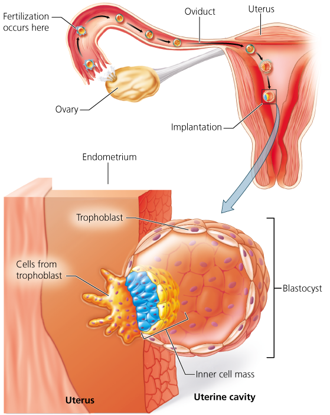
Extraembryonic membranes
- Four membranes outside the embryo that protect and nourish it, beginning toward the end of the pre-embryonic period:
- Amnion — encloses the embryo in the fluid-filled amniotic cavity; the amniotic fluid cushions it and can be sampled by amniocentesis (Ch. 20).
- Yolk sac — the main food source in many vertebrates, but small in humans and not a source of nourishment; a site of early blood cell formation, and holds the primordial germ cells that migrate to the gonads and become sperm or oocytes.
- Allantois — small; its blood vessels become part of the umbilical cord, the ropelike link of vessels and connective tissue between embryo and placenta.
- Chorion — outermost, against the uterine cavity; the embryo's major contribution to the placenta.
- Origins: amnion, yolk sac and allantois from the inner cell mass; chorion largely from the trophoblast.

where the extraembryonic membranes come from; Whalen's deck (slide 21) says the trophoblast "gives rise to the extraembryonic membranes", while Ch. 18 §18.2 says the amnion, yolk sac and allantois come from the inner cell mass and only the chorion largely from the trophoblast.
The placenta
- The placenta handles all exchange between mother and embryo (later fetus); it forms from the embryo's chorion and the mother's endometrium at the implantation site.
- Oxygen and nutrients diffuse from maternal to embryonic blood; wastes such as carbon dioxide and urea go the other way.
- It makes HCG, estrogen and progesterone, which maintain pregnancy. High placental HCG may cause morning sickness (nausea and vomiting, not only in mornings).
- Formation — begins soon after implantation: trophoblast-derived cells invade the endometrium; cavities fill with blood from severed maternal capillaries; fingerlike chorionic villi grow in, creating ever-larger pools of maternal blood. Fully developed by week 12, at about 680 g (1.5 lb).
- Exchange path — villi carry fetal vessels; oxygen and nutrients diffuse from the maternal pools into villus capillaries and reach the embryo by the umbilical vein; wastes leave by the umbilical arteries. Some villi also anchor the placenta to maternal tissue.
- Maternal and fetal blood do not mix normally — everything crosses capillary walls. But some drugs, alcohol, caffeine, cigarette-smoke toxins and HIV do cross.
- Placenta previa — low implantation, so the placenta covers the cervix; may cause premature birth or maternal hemorrhage; most cases are delivered by cesarean section (surgical removal of fetus and placenta through an incision in the abdominal wall and uterus) before labor.

Embryonic period: germ layers
- Weeks 3–8 — begins with three germ layers; by its end all organs have formed and the embryo looks distinctly human. Three interrelated processes: cell division; cell differentiation (cells specialise in structure and function); and morphogenesis (development of overall body organisation and shape).
- Gastrulation — during implantation the inner cell mass moves away from the blastocyst surface and the amniotic cavity forms; the inner cell mass flattens into the embryonic disk, the future embryo proper. In week 3 its cells migrate to form the three primary germ layers; these movements are gastrulation, the embryo a gastrula. As the start of body shaping, it is a key part of morphogenesis.
- Every tissue and organ comes from the germ layers:
- Ectoderm — outer layer of skin and its derivatives (hair, nails, oil and sweat glands, mammary glands) and the nervous system.
- Endoderm — linings of the digestive, urinary and respiratory tracts, and the pancreas, liver, thyroid and parathyroids.
- Mesoderm — muscle, bone and other connective tissue, and the heart, kidneys, ovaries and testes.
- Notochord — a flexible rod of mesoderm formed during gastrulation where the vertebral column will be; defines the long axis and gives rigidity. Vertebrae form around it and it degenerates; its only remnant is the pulpy centre of the intervertebral disks.

The central nervous system
- Brain and spinal cord form from ectoderm, in steps numbered as in Figure 18.10:
- (1) ectoderm over the notochord thickens into the neural plate;
- (2) the plate folds into a groove along the back;
- (3) its raised sides, the neural folds, meet and fuse into the fluid-filled neural tube — neurulation. Its anterior part becomes the brain, the posterior the spinal cord;
- (4) cells that will form the peripheral nervous system detach from the ectoderm and migrate through the body;
- (5) beside the tube, mesoderm forms blocks, the somites, which make the skeletal muscles of the neck and trunk, connective tissues and vertebrae.
- Neural tube defects — the tube fails to develop and close properly.
- Spina bifida ("split spine") — part of the spinal cord and the adjacent spine develop abnormally, sometimes with a fluid-filled sac around the protruding cord; severity varies, and some cases improve with surgery.
- Anencephaly — incomplete brain development; stillbirth or death shortly after birth.


The reproductive system
- The egg always carries an X; the sperm an X or a Y. Sex is fixed at fertilization by the sperm: XX normally female, XY normally male.
- For the first few weeks male and female embryos have the same anatomy. About 6 weeks after fertilization, SRY (sex-determining region of the Y) starts testis development in XY embryos; the testes make testosterone, which directs male development. Without a Y, ovaries develop.
- External genitalia — at 6 weeks both sexes have a small bud, a urogenital groove, urogenital folds around it, and labioscrotal swellings outside those. The same structures then take two paths, typically complete by the end of the third month while the internal organs differentiate:
| At 6 weeks | Male (testosterone; groove closes) | Female (groove stays open) |
|---|---|---|
| Bud | Glans penis | Clitoris |
| Urogenital folds | Shaft of penis | Labia minora |
| Labioscrotal swellings | Scrotum (testes descend later) | Labia majora |

Fetal period and growth
- Week 9 to birth — tissues keep differentiating, but the main change is rapid growth, made possible by the placenta, complete early in this period.
- Over the full 38 weeks, weight rises from 8 g to 3400 g (about 0.3 to 120 oz) and head-to-rump length from 50 to 360 mm (about 2 to 14 in.).
- The head's growth slows relative to the body, changing proportions — allometric growth, differences in the relative growth rates of body parts, which continues after birth.

Fetal circulation
- Lungs, kidneys, liver and other organs are not yet doing their postnatal jobs, so most blood is shunted past them; the fetus exchanges gases, nutrients and wastes with maternal blood at the placenta.
- Two umbilical arteries, branching from large arteries in the legs, carry blood through the cord to the placenta.
- Oxygen- and nutrient-rich blood returns in the umbilical vein — the only fetal vessel with fully oxygenated blood. Some goes to the liver (which makes red blood cells but does not yet digest); most bypasses it through the ductus venosus to the heart.
- The lungs need little blood. Most blood entering the right atrium crosses the foramen ovale, a hole between the atria, to the left atrium, left ventricle and body.
- The ductus arteriosus links the pulmonary trunk to the aorta, diverting blood leaving the right ventricle away from the lungs.
- At birth — the cord is tied and cut (the scar is the navel); the umbilical arteries, umbilical vein, ductus venosus and ductus arteriosus constrict and become ligaments; the foramen ovale normally closes soon after, leaving a small depression.
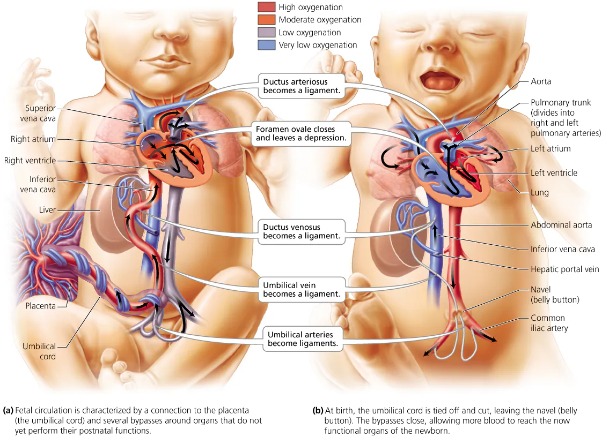
18.3Birth
pp. 378Labor
- Birth (parturition) — usually about 38 weeks after fertilization.
- Labor — expels the fetus from the uterus through the vagina. Contractions come at regular, usually painful, intervals. Oxytocin from the posterior pituitary (Ch. 10) makes uterine smooth muscle contract, and contraction stimulates more oxytocin release — a positive feedback loop; contractions intensify and come closer together.
- Three stages:
- Dilation stage — regular contractions until the cervix is fully dilated to 10 cm; usually 6–7 hours, shorter after a previous birth. The amniotic sac usually ruptures now ("breaking water"), or is ruptured deliberately.
- Expulsion stage — full dilation to delivery of the baby; 1 or more hours. An episiotomy (an incision enlarging the vaginal opening) may ease delivery and avoid ragged tearing, which heals more slowly. The cord is clamped and cut, the newborn breathes, and fetal circulation begins converting.
- Placental stage — delivery to expulsion of the afterbirth (placenta and fetal membranes), about 15 minutes later. Continuing contractions expel it and constrict torn maternal vessels; any incision or tear is sutured.

Position and prematurity
- Most babies are born head first, facing the mother's vertebral column. Breech birth — buttocks first — is associated with difficult labor and umbilical cord accidents (compression, or looping around the neck); physicians often try to turn the baby, and otherwise may do a cesarean section.
- Full-term — born at least 38 weeks after fertilization; average 3400 g (7.5 lb). Because the placenta deteriorates, labor is typically induced at 41 or more weeks.
- Premature — born before 37 weeks of gestation; survival improves with time in the reproductive tract.
- At or before 22 weeks (about 630 g, 1.4 lb), doctors usually do not attempt to save the infant — major disabilities are almost inevitable.
- At 25 weeks and about 1 kg (2.2 lb), 50–80% survive with intensive care, needed because their organ systems cannot yet take over from the mother's body.
- Care often includes blood transfusions, tube feeding and a respirator; problems may persist well beyond infancy.

18.4Birth Defects
pp. 379–380Causes and critical periods
- Birth defects — developmental defects present at birth, in structure, function, behavior or metabolism.
- Genetic — mutant genes, or changes in chromosome number or structure (Ch. 19).
- Environmental — drugs, chemicals, radiation, poor maternal nutrition, and viruses such as herpes simplex and rubella (German measles). Psychoactive drugs: Ch. 8a.
- Agents do the most harm during rapid differentiation, when organs form — largely the embryonic period (weeks 3–8).
- Embryonic exposure can cause major defects (major structural abnormalities, in 2–3% of newborns) — spina bifida, for example.
- In the fetal period, when organs mostly grow, agents cause minor defects — such as one horizontal crease across the upper palm instead of two — in about 4–5% of newborns.
- Critical period — each organ system develops at its own time and rate, so each has a window when it is most susceptible.
- Central nervous system — the longest, weeks 3–16, reaching into the fetal period; later exposure tends to cause minor defects. This may explain why the brain is where defects are most often found.
- Limbs — short, about weeks 4–6; agents then can cause tiny or absent limbs.
- First two weeks — exposure is not known to cause birth defects, since development centres on structures outside the embryo, but agents may disrupt cleavage or implantation and cause spontaneous abortion; chromosomal abnormalities also cause many at this time.
- Folic acid — a B vitamin that helps prevent spina bifida and anencephaly: 400 micrograms daily, from at least 1 month before pregnancy and throughout.
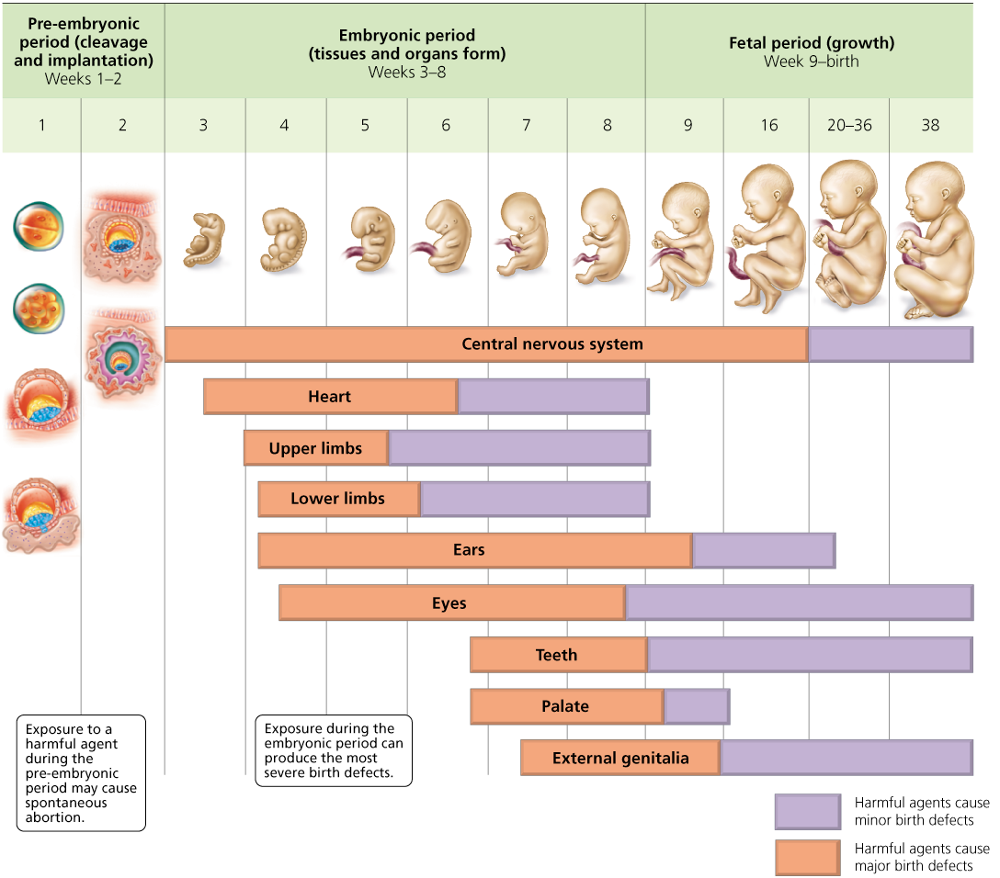
when most birth defects arise; Whalen's deck (slide 73) says environmental agents cause major defects during critical periods, "most during the pre-embryonic period", while Ch. 18 §18.4 and Figure 18.16 say exposure in the first two weeks is not known to cause birth defects (it risks spontaneous abortion instead) and that agents do most harm in the embryonic period, weeks 3–8.
18.5Milk Production by Mammary Glands
pp. 381Lactation
- Lactation — production and ejection of milk from the mammary glands (breast structure, Ch. 17).
- Prolactin (anterior pituitary) promotes milk production.
- Oxytocin (posterior pituitary) stimulates milk ejection (Ch. 10).
- Prolactin rises in pregnancy and peaks at birth, but high estrogen and progesterone block its action, so milk is made only once they fall at birth — usually available about 3 days later. Meanwhile the infant drinks colostrum, a cloudy, yellowish fluid of different composition.
- The infant's sucking stimulates prolactin release and keeps production going; at weaning, when sucking stops, production stops.
- For the infant, compared with formulas (many based on cow's milk): more digestible; much less likely to cause allergy, constipation or obesity; milk and colostrum carry antibodies and immune-boosting proteins; the harder sucking is thought to aid development of jaws, teeth and facial muscles.
- For the mother: oxytocin released by sucking helps the uterus shrink back to nearly prepregnant size; milk production uses energy, aiding weight loss; nursing for at least 1.5 years seems to give some protection against breast cancer.
- Bottle-feeding suits women who prefer it, have difficulty breast-feeding or take medications that pass into milk; HIV-positive mothers should not breast-feed, as the virus passes in milk.
18.6Postnatal Period
pp. 382–383Stages after birth
- Each stage brings biological, social and psychological change.
- Infancy — birth to 12 months; rapid growth, though slower than prenatal. Rolling over, sitting, crawling, standing, some walking by the end of year one; cooing to babbling to single words in some 1-year-olds; growing response to social stimuli.
- Childhood — 13 months to 12 or 13 years; motor and coping skills improve, and every organ system except the reproductive system becomes fully functional.
- Adolescence — from puberty (sexual maturation; typically 12–15 in girls, 13–16 in boys) to the late teens. A growth spurt in both sexes; adolescence ends when growth stops, late teens or early twenties.
- Adulthood — generally by about 20 or 21; its start is imprecise, since physical, behavioral and social factors all shape the definition.
Aging
- Aging — the normal, progressive decline in the structure and function of the adult body, beginning a few years after growth stops.
- Outside: graying, thinning hair, wrinkled and sagging skin, less muscle, stooped posture. Inside: weaker bones, stiffer vessels, fewer and less efficient nephrons (challenging fluid balance), declining memory, sight, hearing, taste and smell.
- Gradual, often from middle age: a falling basal metabolic rate brings weight gain after about 35 unless intake falls or activity rises; in the forties most lose close focus; around 50, high-frequency hearing declines, from a loss of inner-ear hair cells that begins in the twenties.
- What you do now shapes old age, and health disparities make it worth putting health first while young.
| Organ System | Some Changes That Occur with Aging |
|---|---|
| Integumentary | Skin thins and loses elasticity (wrinkles); fewer sweat glands, so temperature is harder to regulate; hair thins as follicles die and greys as pigment cells die |
| Skeletal | Bones lighter and more brittle, especially in women after menopause; about 7.6 cm (3 in.) of height lost as disks deteriorate; joints stiffen and hurt as synovial fluid falls |
| Muscular | Muscle mass falls — cells lost, the rest shrink |
| Nervous | Brain mass decreases; slower movements and reflexes (slower conduction and neurotransmitter release); hearing less acute (hair cells lost); focusing declines as the lens stiffens; smell and taste less acute |
| Endocrine | Women: estrogen and progesterone fall with menopause; men: testosterone falls; both: growth hormone falls |
| Cardiovascular | Cardiac output falls as heart walls stiffen; blood pressure rises as arteries lose elasticity and clog with fatty deposits |
| Respiratory | Lung capacity falls as alveoli break down and lung tissue loses elasticity |
| Digestive | Basal metabolic rate declines; liver's detoxifying ability declines |
| Urinary | Kidney mass and filtration rate decline; especially in women, the external urethral sphincter weakens (incontinence); in men the prostate enlarges (painful, frequent urination) |
| Reproductive | Men: fewer viable sperm, lower semen volume; women: ovulation and menstruation cease at menopause |

Possible causes of aging
- Scientists do not agree; most think there is no single cause but several interacting processes.
- Changes in critical body systems — e.g., declining immune function or falling growth hormone (Ch. 10).
- Cessation of cell division — division slows in aging animals; cultured cells divide only a limited number of times, suggesting a genetically programmed stop, and the number correlates with donor age and species life span (roundworm, mouse, human).
- Telomeres — protective DNA at chromosome tips (Ch. 21a) — may count divisions: a piece is lost at each copying, and once gone the chromosome can no longer divide. Shown in cultured cells, but no clear link to human longevity.
- Damage to DNA and other macromolecules — oxygen free radicals, reactive by-products of normal metabolism with an unpaired electron, damage DNA, proteins and lipids; DNA repair also declines with age, letting mutations accumulate.
- Caloric restriction (less food, full nutrition) slows aging and extends life in animals, mostly lab rodents — thought to lower body temperature, metabolism and free-radical production. It fails in some species, varies between rodent strains, appears not to lengthen life in rhesus monkeys, and has little evidence in humans; genetics and a healthy diet look like the main determinants of human longevity.
A high-quality old age
- Aging cannot at present be slowed, stopped or reversed, whatever antiaging products claim.
- The longest documented life span is 122 years (Jeanne Calment, France); US life expectancy at birth is about 79.
- Life span seems set by genes, environment and lifestyle. Many conditions of age are treatable (artificial hips and knees; cataract lenses replaced). Antioxidants — substances that inhibit the formation of free radicals — are being tested for delaying some aspects of aging.
- Lifestyle is what we control most: good nutrition, exercise, sleep, no smoking, checkups. Choices when young delay some aging (avoiding sun delays wrinkles); later, exercise, social and intellectual stimulation and good nutrition help prevent decline. Earlier is better, but it is never too late.
- Aging also brings experience, perspective and wisdom.
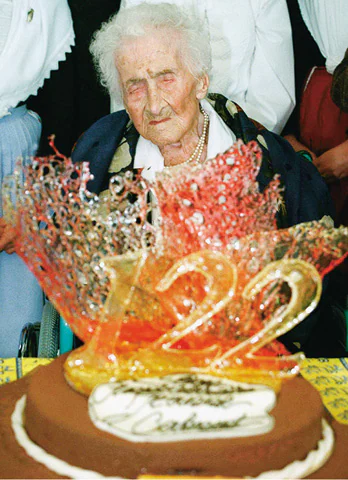
Stop And Think
1Knowing what produces identical and fraternal twins, how could triplets form in which two are identical and one is fraternal? (§18.2)
Two oocytes are fertilized by different sperm, giving two zygotes; then one of them splits early in cleavage. The split pair are identical, the third fraternal.
2Some newborns' foramen ovale fails to close; these "blue babies" look bluish. What might explain their appearance? (§18.2)
Blood keeps passing from right to left atrium, skipping the lungs, so poorly oxygenated blood reaches the body. The book does not answer this directly.
Figure Questions
1Which two structures in the fetus allow blood to bypass the pulmonary circulation? (Figure 18.13, §18.2)
The foramen ovale and the ductus arteriosus. The ductus venosus bypasses the liver, not the lungs.
End Of Chapter Questions
1Fertilization
a) typically occurs in the uterus. b) often involves more than one sperm uniting with an egg. c) is the process by which the zygote becomes embedded in the uterine lining. d) typically occurs in an oviduct.
d
Usually in a widened part of the oviduct. c describes implantation.
2The yolk sac
a) is a primary source of nourishment for human embryos. b) is the embryo's major contribution to the placenta. c) contains primordial germ cells. d) encloses the embryo in a fluid-filled sac.
c
It makes early blood cells and holds primordial germ cells. It does not nourish human embryos (a); b is the chorion, d the amnion.
3The placenta
a) produces estrogen, progesterone, and human chorionic gonadotropin. b) is the site where fetal and maternal blood directly mix. c) usually forms in lower portions of the uterus. d) forms from the amnion of the embryo.
a
It makes HCG, estrogen and progesterone. The bloods do not mix (b); it forms from chorion and endometrium, not amnion (d).
4Neurulation
a) is the process by which the neural tube forms. b) is the process by which the notochord forms. c) occurs just before gastrulation. d) involves endoderm.
a
Neurulation forms the neural tube from ectoderm. The notochord (b) forms during gastrulation, which comes first.
5The fetal period
a) is the time when tissues and organs form. b) is characterized by rapid growth. c) runs from week 2 to week 8. d) is when exposure to harmful environmental agents is most likely to produce major birth defects.
b
Its main change is rapid growth. Organs form and major defects arise in the embryonic period (a, d).
6Which of the following statements regarding childbirth is true?
a) Most babies are born feet first. b) Delivery of the baby follows delivery of the placenta. c) Full-term babies are those born at 32 weeks' gestation. d) Infants born prematurely with very low birth weight require intensive care after birth.
d
Their organs are not yet functional. b reverses stages 2 and 3; full term is at least 38 weeks (c).
7Which of the following statements regarding development of the reproductive system is true?
a) Testosterone directs development of male and female reproductive organs. b) In females, but not in males, the urogenital groove closes. c) The glans penis in males and clitoris in females form from the same embryonic structure. d) Male and female reproductive structures have formed by 6 weeks after fertilization.
c
Both come from the same bud. The groove closes in males, not females (b); 6 weeks is when differentiation starts (d).
8Soon after fertilization, the zygote undergoes a series of rapid mitotic divisions called
a) gastrulation. b) neurulation. c) cleavage. d) cell differentiation.
c
Cleavage begins about a day after fertilization. Gastrulation (a) is week 3 cell movement, not division.
9Which of the following statements about the notochord is false?
a) The notochord forms from mesoderm. b) The notochord is part of the nervous system. c) The notochord provides rigidity and defines the long axis of the embryo. d) The vertebral column replaces the notochord, which degenerates, leaving remnants in intervertebral disks.
b
It is mesoderm; the nervous system forms from the ectoderm above it. a, c and d are stated in the text.
10Which of the following statements about gastrulation is false?
a) Gastrulation occurs after implantation. b) Gastrulation occurs during the fetal period. c) Gastrulation establishes three germ layers (ectoderm, mesoderm, and endoderm). d) Gastrulation is a key part of morphogenesis.
b
It happens in week 3, the embryonic period. a, c and d are true.
11Which hormone stimulates milk ejection?
a) prolactin b) human chorionic gonadotropin c) progesterone d) oxytocin
d
Oxytocin ejects. Prolactin (a) produces.
12Highly reactive molecules, produced by normal cellular metabolism, that damage DNA are called
a) antioxidants. b) telomeres. c) collagen. d) free radicals.
d
Free radicals damage DNA, proteins and lipids. Antioxidants (a) inhibit their formation. Applying the Concepts — four open questions, p. 386, numbered on.
13Juan was called a "blue baby" at birth and had corrective surgery. What did the surgeons correct, and why?
An open foramen ovale.
While open, blood skips the lungs and poorly oxygenated blood reaches the body. The book does not describe the surgery.
14Why might exposure to thalidomide, a drug that disrupts limb development, during weeks 4 to 6 produce more severe birth defects than similar exposure toward the end of gestation?
Weeks 4–6 are the limbs' critical period.
Agents do most harm while organs form; by late gestation the limbs are only growing (Figure 18.16).
15Dora is due in about a month and is deciding between breast- and bottle-feeding. As her physician, describe how milk is produced and ejected, the advantages of breast-feeding, and when you would recommend bottle-feeding instead.
Prolactin produces milk, oxytocin ejects it. Bottle-feed if HIV-positive, on medications that pass into milk, having difficulty, or by preference.
§18.5 — advantages: digestibility, fewer allergies, antibodies, jaw development; for the mother, uterus shrinks, weight loss, some breast-cancer protection.
16Your grandmother takes vitamin E as a potential antioxidant. What is an antioxidant, what "condition" is she hoping to treat, and is it likely to work?
A substance that inhibits free-radical formation; she hopes to slow aging; the book gives no reason to expect it to work.
Antioxidants are still under study, and aging cannot at present be slowed. The book does not discuss vitamin E itself.
Boxed essays
Making Babies (§18.2, pp. 368-377)
- Infertility — no conception after 1 year of unprotected intercourse; about one in six American couples. Female causes: hormonal imbalance disrupting ovulation or implantation; scarring blocking the oviducts. Male causes: often few or sluggish sperm; cryptorchidism (undescended testes) can cause sterility. Some women make antibodies against their partner's sperm; some causes are unknown. About half of couples seeking help can be helped.
- Assisted reproductive technology (ART) — treatments in which eggs or embryos are handled; sperm-only treatments and drugs that only stimulate egg production are not ART.
- Hormones can trigger ovulation; progesterone may help women prone to miscarriage. Hormones do not fix scarred oviducts or low sperm counts.
- Artificial insemination — for low sperm count: partner's concentrated or donor sperm placed in the cervix or vagina around ovulation.
- ICSI (intracytoplasmic sperm injection) — one sperm injected into an egg; for few or weak sperm.
- IVF (in vitro fertilization) — the most common ART: superovulation, eggs fertilized in a dish, pre-embryos transferred to the uterus. Bypasses the oviducts. A surrogate can carry for a woman without a uterus. Fails sometimes because pre-embryos do not implant.
- GIFT — eggs and sperm placed in the oviduct; ZIFT — zygotes placed in the oviduct. Both need healthy oviducts.
- About 20–28% live births per egg retrieval; $10,000–$20,000 per attempt, often several needed.
- Questions: should donors have claims on offspring? What happens to "extra" pre-embryos?
Choosing a child's sex by sperm sorting (§18.2, pp. 368-377)
- X- and Y-bearing sperm can be separated so parents can choose a girl or a boy — to avoid X-linked disorders, or to balance a family. Should it be allowed?
Saving very premature infants (§18.3, p. 378)
- Babies born before 25 weeks have low survival and a high chance of severe disability. Should every one be saved, or should criteria decide?
Disparities in Health and Health Care at All Life Stages (§18.6, pp. 382-383)
- US disparities are reported by age, race, ethnicity, sex, socioeconomic status, sexual orientation, residence and disability; the essay focuses on race and ethnicity.
- Health: African American infant mortality is 2.3 times that of non-Hispanic whites; African Americans aged 5–24 are four to six times more likely to die of asthma; African American and Hispanic adults are almost twice as likely to develop diabetes; cancer, cardiovascular disease and HIV/AIDS rates are higher in minorities.
- Care: first-trimester prenatal care in 76.1% of African American vs 88.1% of non-Hispanic white births; lower immunization and breast-cancer screening among Hispanics; later cancer diagnosis and more diabetic amputations among minorities.
- Causes are hard to separate: a 2013 review found evidence of provider racist attitudes in 26 of 37 studies (interpersonal vs institutionalized racism); income, diet, stress and education also play parts. Healthy People 2020 made eliminating disparities one of its four overarching goals.
Adela and Joseph (§18.6, pp. 382-383)
- Over a year without conception; Joseph's semen is normal; Adela has endometriosis, whose scar tissue can block the oviducts. Which ART?
- IVF — it bypasses the oviducts. GIFT and ZIFT need healthy oviducts; insemination and ICSI treat sperm problems.
Ibuprofen and longevity (p. 386)
- A 2014 PLOS Genetics paper found ibuprofen extended life span in yeast, roundworms and fruit flies (about 12 human-equivalent years in worms and flies); the Daily Express headlined it as adding 12 years to human life.
- Questions: is the headline accurate? Does an effect in short-lived organisms transfer to humans? Who funded it?
Chapter 18a — Special Topic — Autism Spectrum Disorder
Captured from the Pearson eText. pp. 387–393.
- 18a.1 Characterization and Prevalence
- 18a.2 Diagnosis
- 18a.3 Possible Causes
- 18a.4 Treatment and Therapy
- 18a.5 Fear That Vaccines Cause Autism Spectrum Disorder
Did you know
- The CDC estimates that 1 in 68 children in the United States has autism spectrum disorder.
- Autism comes from the Greek autos, "self" or "alone" — the withdrawal from social interaction people with ASD often show.
Opening
Ch. 18 dealt with human development, mainly before birth. Ch. 18a turns to autism spectrum disorder, a lifelong neurodevelopmental disorder diagnosed in early childhood: how it is defined, diagnosed and treated, what might cause it, and the fear that childhood vaccines trigger it. (p. 387)
The chapter as one chain
- Defined by social-communication deficits plus repetitive behavior from early childhood.
- Diagnosed from missed milestones and DSM-5 criteria — no medical test.
- Caused by brain, genes and environment together — not parenting, not vaccines.
- Treated with education and therapy; no drug for the core symptoms.
What to focus on
No slides for 18a — the Ch. 18 deck stops at the postnatal period. Whalen's objectives, from BIO 5 Study Guide CH 18.docx (one guide for Ch. 18 and 18a):
- The symptoms seen in autism spectrum disorder.
- Possible interventions for autism spectrum disorder.
- Possible causes of autism spectrum disorder.
18a.1Characterization and Prevalence
pp. 388–389Definition and the DSM
- Autism spectrum disorder (ASD) — a family of neurodevelopmental disorders marked by (1) deficits in social communication and interaction and (2) repetitive, restricted patterns of behavior. Symptoms must be present in early childhood and impair daily functioning.
- It therefore reaches everyone who cares for the child or decides on services — parents, siblings, friends, teachers, social workers.
- Diagnostic and Statistical Manual of Mental Disorders (DSM) — the American Psychiatric Association's regularly updated handbook for classifying mental and neurodevelopmental disorders.
- DSM-5 (May 2013) replaced DSM-IV-TR, adding new criteria (§18a.2) and folding four separate disorders into ASD: autistic disorder (autism), Asperger's disorder (Asperger's syndrome), pervasive developmental disorder not otherwise specified (PDD-NOS) and childhood disintegrative disorder.
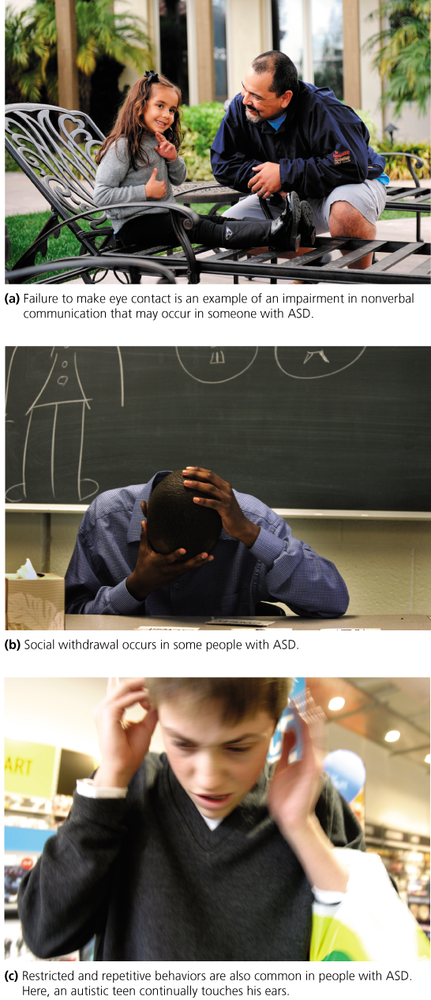
Communication and social interaction
- Nonverbal communication is hard both to use and to understand: facial expression may be disconnected from words (smiling while describing something sad or frightening); some have difficulty making eye contact, others stand too close; reading others' faces and body language may be poorly developed.
- The give-and-take of conversation is hard — interrupting, or talking too long on a favourite subject.
- Communication and social skills are linked: struggling to listen and take turns makes interaction difficult. Some with ASD do not want to interact; others want to but struggle to form and keep relationships.
Repetitive behavior and sensory reactions
- Self-stimulatory activities — repetitive motor activities such as hand flapping, spinning a toy helicopter's blades close to the eyes, or switching lights on and off; they also hinder social interaction.
- Rituals — e.g., touching objects in a precise order before leaving home; pointless-looking to others, but disrupting them can cause extreme frustration and tantrums.
- All-consuming interests — preoccupation with topics such as train or tide timetables, talked about incessantly.
- Under- or overreactions to sensory stimuli such as pain or cold are typical.
- New research: males with ASD tend toward stereotyped behaviors, aggression and hyperactivity; females toward anxiety and depression.
- ASD-like symptoms occur without ASD: in Fragile X syndrome (Ch. 20), and in toddlers, who briefly flap their hands when excited or frustrated and stop once they can say it. In ASD the flapping continues well past toddlerhood, regularly, for long periods, and interferes with other activities.
Prevalence
- About 1 in 68 US children (CDC), across racial, ethnic and socioeconomic lines; almost five times more common in boys.
18a.2Diagnosis
pp. 390The DSM-5 criteria
- Diagnosis needs Criterion A (all three deficits), Criterion B (at least two symptoms), early onset (C) and limited functioning (D) — Table 18a.1.
- Changes from DSM-IV-TR: communication and social interaction, separate before, merge into social/communication deficits; language delay is dropped (not unique to ASD, not in everyone with it); sensory over- or underreaction and unusual sensory interest are added.

Milestones and screening
- ASD is usually first considered when a child misses developmental milestones — age-specific achievements in communication, social behavior and motor skills (Table 18a.2). Early diagnosis allows early intervention, which benefits the child.
- Developmental screening — at periodic exams, pediatricians and nurses question parents and watch how the child reacts, speaks and moves; delays lead to a developmental pediatrician or psychologist.
- Further screening draws on parent interviews, pediatrician records, clinical observation, psychological testing, speech/language/hearing assessments, physical and neurological exams, family history, and checklists or rating scales, weighed together by a trained clinician.
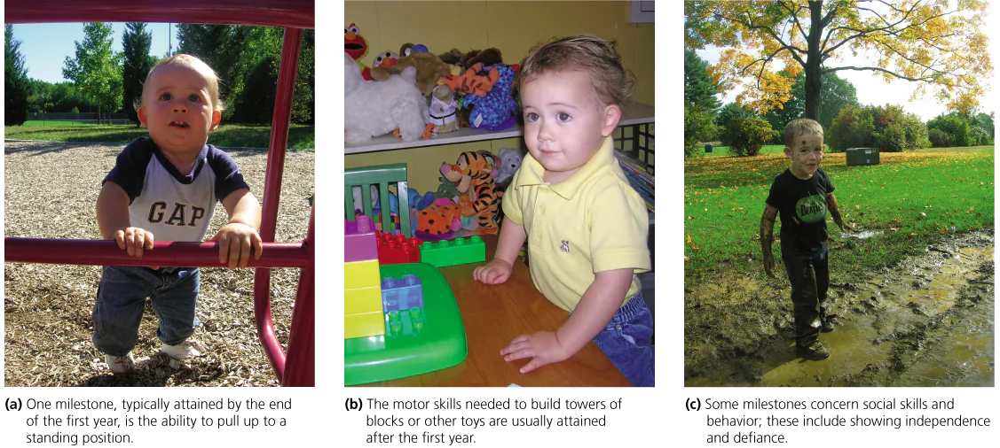

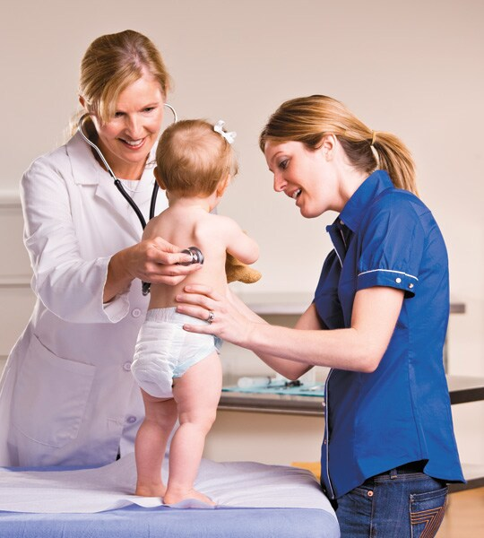
18a.3Possible Causes
pp. 391Not parenting
- The "Refrigerator Mother" hypothesis blamed a cold, uncaring parent (usually the mother). Refuted in the mid-1960s: ASD is a neurodevelopmental disorder with a genetic basis, linked to no parenting style. Precise causes are unknown; most researchers agree genes and environment both play a role.
The brain
- Neuroimaging and brain-tissue studies show differences from controls in brain growth and organization, many probably prenatal — e.g., abnormal migration of cells as the nervous system forms may alter structure, circuitry, and ultimately thinking and behavior.
- Brains of children with ASD show patches of disorganized cells in the cortex, the outer layer of each cerebral hemisphere (Ch. 8) — something went wrong in prenatal development.
- Imaging during tasks or visual/auditory stimulation suggests different cognitive strategies, some processed in different brain areas. The face-recognition region is consistently underactivated, yet at rest children with ASD show more brain activity.
- The goal is a brain marker for diagnosis. Carnegie Mellon researchers sorted adults with and without ASD with 97% accuracy from activation while thinking of social acts such as hugging: those without ASD included themselves; those with ASD did not.
- Brain anatomy differs between males and females with ASD, so studies — many male-biased — should group by sex.
Genes
- Family studies: 18.7% of infants with an older biological sibling with ASD developed it — far above the general population.
- Twin studies. Dizygotic (fraternal) twins — two secondary oocytes, different sperm; no more alike than ordinary siblings. Monozygotic twins — a split pre-embryo; nearly identical (gene copy number can differ), and subject to epigenetic changes — environment-induced (e.g., diet) changes in gene expression that leave the DNA sequence unchanged.
- One MZ twin with ASD → the other 36–95%; DZ → 0–31%. Higher MZ concordance points to genes; MZ below 100% points to environment acting, before or after birth, on a susceptible genetic background.
- 100+ genes are linked to ASD, 60 with high confidence (>90% chance their mutations, changes in DNA, Ch. 21, add risk); perhaps up to 1000. They converge on neuron formation and the function and plasticity of synapses (the gap across which a neuron signals, Ch. 7). Higher genetic risk does not make ASD inevitable; gene–gene and gene–environment interactions are under study.
Environment
- Many environmental factors raise risk, each only slightly:
- Maternal effects (the intrauterine environment) and pregnancy and birth complications, such as fetal respiratory distress.
- Prenatal exposure to certain prescription drugs — thalidomide, or valproic acid (an anticonvulsant and mood stabilizer).
- Maternal illness — some evidence links rubella (German measles) in pregnancy.
- Environmental chemicals — air pollutants, some metals and certain pesticides, possibly depending on timing: pesticides early in pregnancy, air pollutants late.
- Advanced maternal and paternal age — perhaps through more mutations, faulty gene expression and cumulative toxin exposure.
- Infertility treatment — ovulation-inducing drugs, the association strengthening the longer a woman is treated. The challenge is untangling factors tied to both: premature delivery, low birth weight, twinning, maternal age.
- Early childhood vaccination is a discredited variable (§18a.5).
18a.4Treatment and Therapy
pp. 392Education and therapy
- Successful educational programs give structure, organization and direction, and directly teach social skills other children learn by other means.
- Individualized Educational Program (IEP) — because ASD varies so much, each school-aged child's plan is built and periodically reviewed by parents, teachers, social workers, school psychologists and district representatives; guaranteed under the Individuals with Disabilities Education Act (IDEA), it ensures the most appropriate education available.
- Therapies, beside classroom accommodations:
- Occupational therapy — improves social, fine motor and self-help skills.
- Sensory integration therapy — helps the nervous system process touch, sound and sight in more typical ways; dogs or horses are sometimes part of it.
- Interactive computer games, and interactive social robots used as therapeutic devices.

Drugs and outcomes
- No drug is known to improve the core symptoms — impaired communication and social behavior with repetitive or unusual behaviors; results are mixed.
- Oxytocin (posterior pituitary, Ch. 10; uterine contractions, milk letdown, social bonding), given as a nasal spray: a small 2010 study found adults with ASD looked more at eyes, with other social gains; a larger study of 38 boys found no benefit; in rodents, early doses raised social behavior but long-term use disrupted bonding. Human long-term effects are unknown.
- Drugs for accompanying behaviors have limited to moderate success. The antipsychotic risperidone is FDA-approved for severe tantrums, aggression or self-injury; metabolic changes and significant weight gain lead some clinicians to use it only short-term, after behavioral interventions fail. Others target hyperactivity, impulsivity and anxiety.
- Prognosis — children do better with stronger cognitive abilities, milder symptoms, and early identification and intervention; adults with at least normal intelligence do best.
18a.5Fear That Vaccines Cause Autism Spectrum Disorder
pp. 393The MMR hypothesis
- Vaccines against measles, mumps, rubella, diphtheria, tetanus and polio have reduced or eradicated these diseases so well that many people no longer know how severe they are. Debate over an ASD link continues without evidence.
- A now-discredited 1998 study reviewed 12 children with both ASD and "irritable bowel disease" (as printed), thought to be caused by a persistent measles-virus infection in the intestines; parents or pediatricians of 9 of the 12 suspected the MMR vaccine (measles, mumps, rubella).
- Proposed chain, never supported: the vaccine's live virus causes chronic measles infection in susceptible children → bowel damage → peptides normally broken down in the gut leak into the blood → they damage the developing brain.
- Too few cases to establish cause; 10 of the 13 authors later retracted the interpretation; critics cited a biased sample and no controls, a critical element of the scientific method (Ch. 1).
- The Institute of Medicine (IOM) found no MMR–ASD link (2001, 2004, 2011); the journal retracted the paper in 2010, citing false claims; a 2014 review again found no association.
The thimerosal hypothesis
- Thimerosal — a mercury-containing organic compound that prevented microbial growth in certain vaccines from the 1930s to the early 2000s; never used in MMR. Mercury harms the nervous system, so a link seemed reasonable.
- 2004 IOM report: the infant–toddler series' mercury could plausibly exceed federal standards — but those cover methylmercury, and thimerosal contains ethylmercury, which the body handles differently. Nerve damage was not disputed, but none was tied to ASD; the evidence rejects a causal link, unrefuted since.
- In 1999 the Public Health Service agencies, the American Academy of Pediatrics and manufacturers agreed as a precaution to reduce or eliminate it, cutting total mercury exposure; mercury from fires, landfills, incinerators and industry is far harder to control.
- Childhood vaccines (under 6) now contain none except some inactivated flu formulations; those for ages 7+ increasingly lack it.
The fear persists
- A 2013 Harris Poll for the National Consumers League found 33% of parents of under-18s believe vaccines can cause ASD. Some decline vaccination, and measles and mumps have resurged in some areas.
- Looking ahead: ASD has a strong genetic component; Ch. 19 turns to chromosomes, the physical basis of heredity.
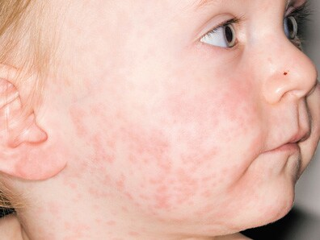
Stop And Think
1Tantrums are normal in developing toddlers. What would you predict about the timing and severity of tantrums in children with ASD? (§18a.1, pp. 388-389)
Longer-lasting and more severe. As with hand flapping, a behavior typical toddlers outgrow once they can speak persists well past toddlerhood in ASD; disrupted rituals add triggers, and risperidone is approved for children with ASD who show severe tantrums. (The book prints no answer.)
Figure Questions
1Why does developmental screening play such an important role in diagnosing ASD? Is there a medical test for the disorder? (Figure 18a.3, p. 390)
There is no medical test — ASD is diagnosed from behavior, starting when a child misses age-specific milestones, so routine screening is how delays are first noticed. Early diagnosis leads to early intervention, which improves outcomes.
Boxed essays
A family that refuses vaccination (§18a.5, p. 393)
- You are a young pediatrician establishing a practice, and a parent refuses to vaccinate her children. Would you exclude the family from your practice? Why or why not?
Identical twins, one with ASD (§18a.5, p. 393)
- Maureen and Ethan's 2-year-old identical twins: Thomas is developing typically; Ryan shows symptoms consistent with ASD.
- How can one identical twin have ASD and the other not? MZ twins are only nearly identical and undergo epigenetic changes; concordance of 36–95%, not 100%, shows an environmental component acting on a susceptible genetic background.
- Risk for a later child? Higher than usual — 18.7% of infants with an older sibling with ASD developed it, against about 1 in 68.
- Ryan had fever and rash about 7 days after his 12-month MMR shot; Thomas had no reaction. Could MMR have caused Ryan's ASD? No — the 1998 study was retracted, and IOM reviews and a 2014 review found no link. (The book does not discuss post-vaccine fever and rash.)
- Is there a cure? No, and no drug for the core symptoms; but early identification and intervention — an IEP at school age, occupational and sensory integration therapy, drugs for accompanying behaviors if needed — improve outcomes.
Board Work — Lab 16
The in-lab board sheet, block by block. Handed in at the start of lab on Monday 11/23.
- 1 Male reproductive system
- 2 Male reproductive hormones
- 3 Female reproductive system
- 4 Female reproductive hormones
- 5 Phases of the menstrual cycle
- 6 Spermatogenesis vs Oogenesis
1 · Male reproductive system
Draw
Side view of the male pelvis: testis and epididymis in the scrotum, vas deferens up through the inguinal canal and over the bladder, seminal vesicle, prostate, bulbourethral gland, urethra through the penis. Inset: a testis cut open to show the coiled tubules.
- scrotum
- testis
- seminiferous tubules
- Sertoli cells
- Leydig (interstitial) cells
- epididymis
- vas (ductus) deferens
- spermatic cord
- inguinal canal
- ampulla
- seminal vesicle
- ejaculatory duct
- prostate
- bulbourethral (Cowper's) glands
- urethra
- corpora cavernosa
- corpus spongiosum
- glans penis
- foreskin
Write
Overview
- The testes (gonads) make sperm; ducts carry them to the female tract; accessory glands add secretions that protect and nourish them.
Testis and duct system
- The testes sit outside the body in the scrotum, whose muscle raises or lowers them to keep the best temperature for sperm.
- Coiled seminiferous tubules hold the spermatogonia (germ cells), Sertoli cells and developing sperm. Leydig (interstitial) cells between them make testosterone.
- The tubules empty into the epididymis, where sperm mature and are stored until ejaculation.
- The vas deferens moves sperm by peristalsis. With nerves and vessels it forms the spermatic cord, which passes through the inguinal canal.
- It loops over the bladder into the ejaculatory duct, which opens into the urethra in the prostate. The urethra runs through the prostate and penis and is shared with the urinary system.
Penis
- The penis delivers sperm. Its erectile tissue: two corpora cavernosa and the corpus spongiosum around the urethra.
- Parasympathetic nerves dilate its vessels; the filled tissue compresses the veins, keeping the erection. Sympathetic nerves drive ejaculation.
- The sensory tip, the glans penis, is covered by the foreskin unless circumcised.
Accessory glands
- Semen is alkaline, protecting sperm in the acidic female tract.
| Gland | Where | What it adds |
|---|---|---|
| Seminal vesicles (paired) | empty into the ampulla of the vas deferens | about 60% of semen; fructose (energy), prostaglandins (coagulation) |
| Prostate | surrounds the urethra just below the bladder | enzymes, and citrate for sperm energy |
| Bulbourethral (Cowper's) glands (paired) | below the prostate | alkaline fluid before ejaculation; neutralizes urine, lubricates |
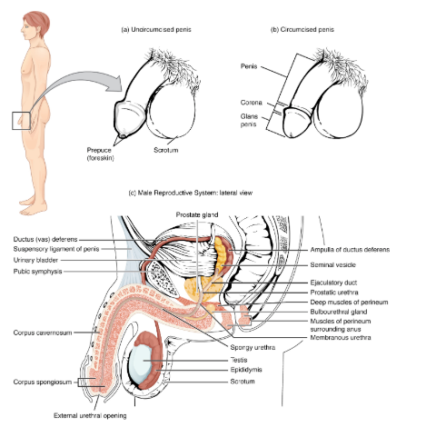
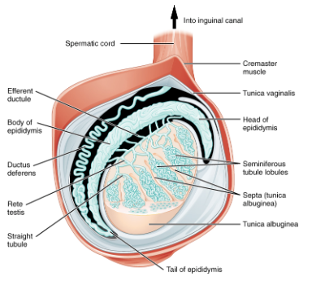
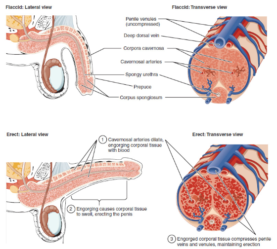
2 · Male reproductive hormones
Draw
The loop down the page: hypothalamus, anterior pituitary, then a testis with Sertoli and Leydig cells. Stimulating arrows down for GnRH, FSH and LH; testosterone and inhibin arrows back up, each marked "inhibits".
- GnRH
- hypophyseal portal system
- gonadotrophs
- FSH
- LH
- Sertoli cells
- androgen-binding protein (ABP)
- inhibin
- Leydig cells
- testosterone
- negative feedback
Write
The hormone cascade
- At puberty the hypothalamus becomes less sensitive to testosterone and releases gonadotropin-releasing hormone (GnRH) into the hypophyseal portal system.
- GnRH stimulates the gonadotrophs of the anterior pituitary to release follicle-stimulating hormone (FSH) and luteinizing hormone (LH).
- FSH stimulates the Sertoli cells to support spermatogenesis and make androgen-binding protein (ABP), which holds testosterone in the tubules.
- LH stimulates the Leydig cells to make testosterone.
What testosterone does
- Androgenic: stimulates spermatogenesis and male secondary sex characteristics (body hair, larger larynx).
- Anabolic: increases bone and muscle mass.
Negative feedback
- Rising sperm production makes Sertoli cells release inhibin, which inhibits FSH, keeping sperm production constant.
- High testosterone inhibits the hypothalamus and anterior pituitary, lowering GnRH, FSH and LH.
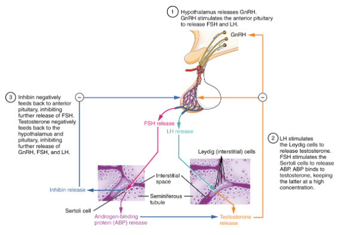
3 · Female reproductive system
Draw
Side view of the female pelvis: ovary, uterine tube with fimbriae, uterus with its three wall layers, cervix, vagina, the bladder and urethra in front, the rectum behind. Beside it, a front view of uterus, tubes and ovaries.
- ovary
- follicles
- uterine tube (oviduct, Fallopian tube)
- infundibulum
- fimbriae
- fundus
- uterus
- perimetrium
- myometrium
- endometrium
- stratum basalis
- stratum functionalis
- cervix
- vagina
- rugae
- vestibule
- labia minora
- labia majora
- clitoris
- alveoli
- lactiferous ducts
- nipple
Write
Overview
- The female system is the ovaries (gonads), the ducts that carry the ovum to the uterus, the uterus and the accessory structures, all inside the pelvic cavity.
Ovaries
- The ovaries hold follicles, develop oocytes and make estrogen, progesterone, relaxin and inhibin. At ovulation an oocyte leaves its follicle.
Oviducts
- Finger-like fimbriae sweep the oocyte into the infundibulum of an oviduct (uterine or Fallopian tube).
- Cilia and peristalsis move the oocyte toward the uterus. Fertilization usually occurs in the distal tube.
Uterus
- The muscular uterus, topped by the fundus, is where the blastocyst implants and the embryo develops.
- Three layers: perimetrium, myometrium (smooth muscle; menstruation and labor), endometrium.
- The endometrium's stratum basalis is never shed; its stratum functionalis sheds in menstruation and regrows each cycle.
- The cervix is the narrow, lower part of the uterus.
Vagina and external genitalia
- The vagina's mucous folds, rugae, let it stretch for intercourse and childbirth.
- It opens into the vestibule, covered by the labia minora, then the haired labia majora. The clitoris (matches the glans penis) sits at its front.
Breasts
- Modified apocrine glands in fat that make milk.
- Prolactin stimulates milk production. Oxytocin stimulates milk release during suckling.
- Milk flows from the alveoli through the lactiferous ducts to the nipple.
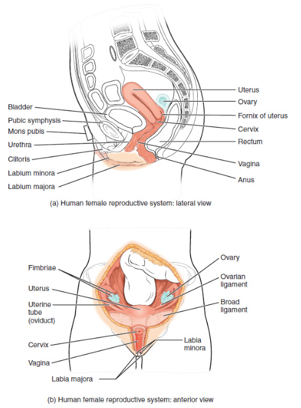
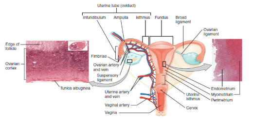
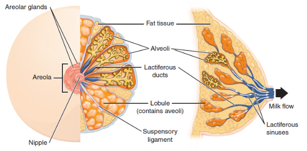
how many layers the uterine wall has; the lab names three — perimetrium, myometrium, endometrium — while Whalen's deck (slide 44) says the wall "has 2 layers", smooth muscle and endometrium, and Ch. 17 §17.4 describes the same two.
4 · Female reproductive hormones
Draw
The same loop as Block 2, ending at an ovarian follicle with granulosa and thecal cells, then the corpus luteum. FSH and LH arrows down; estrogen and progesterone arrows back up marked "inhibits", and one "high estrogen stimulates" arrow for the LH surge.
- negative feedback
- positive feedback
- GnRH
- FSH
- LH
- granulosa cells
- thecal cells
- androgens
- estrogen
- progesterone
- relaxin
- inhibin
- corpus luteum
- hCG
Write
The hormone cascade
- At puberty the hypothalamus becomes less sensitive to androgens and estrogens and releases GnRH, which stimulates the anterior pituitary to release FSH and LH.
- LH stimulates the thecal cells of the follicle to make androgens.
- FSH stimulates follicle growth and the granulosa cells to convert those androgens into estrogen.
Estrogen and progesterone
- Estrogen stimulates follicle development, the female secondary sex characteristics and bone deposition.
- Progesterone, dominant after ovulation, builds and maintains the uterine lining for implantation.
- The corpus luteum also makes relaxin, which prevents uterine contractions, and inhibin.
Feedback
- Negative feedback: moderate estrogen inhibits the hypothalamus and anterior pituitary, lowering GnRH, FSH and LH.
- Positive feedback: high estrogen instead stimulates a surge of LH (and FSH), which triggers ovulation.
- Negative feedback again after ovulation: estrogen and progesterone together inhibit GnRH, FSH and LH.
- Unlike in males, these hormones rise and fall in a cycle.
5 · Phases of the menstrual cycle
Draw
A 28-day timeline with three rows on one day axis: ovarian (follicular phase, ovulation at day 14, luteal phase), uterine (menses, proliferative, secretory) and hormones (LH spike at day 14, estrogen peak just before it, progesterone high in the luteal phase).
- ovarian cycle
- follicular phase
- ovulation
- luteal phase
- corpus luteum
- corpus albicans
- corona radiata
- uterine cycle
- menses
- proliferative phase
- secretory phase
- LH surge
- hCG
Write
- The cycle usually lasts about 28 days but can vary; the follicular phase varies most. Day 1 is the first day of menses.
Ovarian cycle
- Follicular phase (about days 1–14): FSH makes a follicle grow from primary to secondary to tertiary, and the growing follicle makes more and more estrogen.
- Ovulation (about day 14): high estrogen triggers the LH surge, and the LH surge makes the follicle release the secondary oocyte, still wrapped in granulosa cells called the corona radiata.
- Luteal phase (about days 15–28): the granulosa and thecal cells left in the ovary form the corpus luteum, which makes progesterone, estrogen, relaxin and inhibin.
- If no embryo implants, the corpus luteum lasts about 10 days, then breaks down into the corpus albicans. Estrogen and progesterone fall, so they stop inhibiting the hypothalamus and pituitary. GnRH, FSH and LH rise, and a new cycle starts.
- If an embryo implants, its outer cells (trophoblasts) release hCG, which keeps the corpus luteum making progesterone and estrogen, so the uterine lining is not shed.
Uterine cycle
- Menses (about days 1–5, during the follicular phase): estrogen and progesterone are low, so the uterine lining sloughs off.
- Proliferative phase (about days 6–14, during the follicular phase): rising estrogen from the growing follicle rebuilds the lining.
- Secretory phase (about days 15–28, during the luteal phase): progesterone from the corpus luteum thickens the lining and makes its glands secrete, ready for implantation.
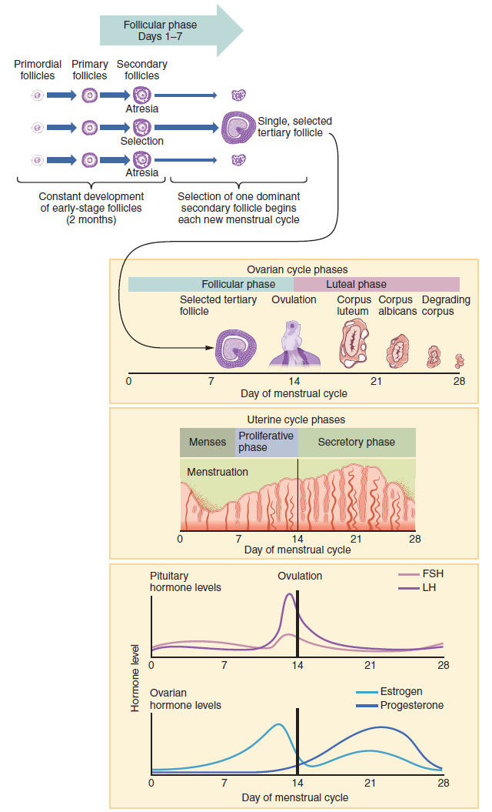
6 · Spermatogenesis vs Oogenesis
Draw
Two ladders side by side, 2n cells on top and n cells below. Left: spermatogonium, primary spermatocyte, two secondary spermatocytes, four spermatids, four sperm. Right: oogonium, primary oocyte, secondary oocyte plus first polar body, ovum plus second polar body. Under the left ladder, one sperm.
- spermatogonia
- primary spermatocyte
- secondary spermatocyte
- spermatids
- spermiogenesis
- spermatozoa
- basement membrane
- lumen
- head
- acrosome
- midpiece
- tail
- oogonia
- primordial follicle
- primary oocyte
- secondary oocyte
- polar body
- ovum
- zygote
Write
Spermatogenesis
- Spermatogonia (2n) by the basement membrane divide by mitosis: one keeps dividing, one becomes a primary spermatocyte (2n).
- Meiosis I makes two haploid secondary spermatocytes (n). Meiosis II turns each into two spermatids.
- Cells move toward the lumen; spermatids become sperm (spermiogenesis).
- A sperm has a head holding the DNA, capped by the acrosome; a midpiece of mitochondria; and a tail that moves it.
Oogenesis
- Before birth, oogonia (2n) divide by mitosis into primary oocytes (2n). These start meiosis I, then stop and wait in prophase I (arrest) inside primordial follicles until puberty or later.
- Each month, in the tertiary follicle, one oocyte finishes meiosis I, becoming a secondary oocyte (n), then stops again at metaphase of meiosis II.
- Cytoplasm splits unequally; the tiny polar body has no organelles and dies.
- Released at ovulation, it finishes meiosis II only if fertilized, giving the ovum and a second polar body; the nuclei fuse into a zygote (2n).
| Spermatogenesis | Oogenesis | |
|---|---|---|
| Begins | puberty | before birth, during development |
| Where | seminiferous tubules | ovarian follicles |
| Cytoplasm divides | equally | unequally, making polar bodies |
| From one primary cell | four sperm | one ovum and one to three polar bodies |
| Meiosis II finishes | before the sperm is released | only after fertilization |
| Continues | through life, continuous and prolific | until menopause, about one a month |
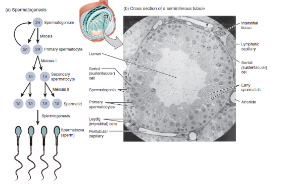
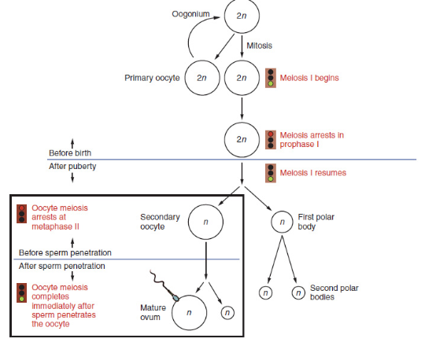
what the mature follicle is called; the lab grows a follicle from primary to secondary to tertiary and calls the tertiary follicle the Graafian follicle, while Ch. 17 §17.4 and Whalen's deck (slide 55) call the mature follicle a secondary (Graafian) follicle; the lab also calls the follicles present at birth primordial, where Ch. 17 calls an oocyte in one layer of follicle cells a primary follicle.
Lecture 1 — Mon 11/23
Outlined from the transcript. Paired with weeks/week-15/sources/slides/Ch14 AC SP20.pptx. Slide counts are the emphasis signal — more slides means more exam weight.
- L1.1 Where this lecture sits
- L1.2 Why we breathe: oxygen in, carbon dioxide out, pH
- L1.3 Four processes, the respiratory membrane, upper and lower tracts
- L1.4 The airway in one pass: pharynx to alveoli
- L1.5 The nose: conchae, olfaction, PCCE and smoking
- L1.6 Sinuses, pharynx and the auditory tube
- L1.7 The larynx: cartilages, vocal cords, epiglottis, glottis
- L1.8 Swallowing, choking, pitch and laryngitis
- L1.9 Bronchioles and the bronchial tree
- L1.10 Asthma
- L1.11 Alveoli: compliance, type I and II cells, surfactant, RDS
- L1.12 Mechanism of breathing: Boyle's law, active inspiration, passive expiration, COPD
- L1.13 Spirometry: the volumes and capacities
- L1.14 External and internal respiration, and gas transport
- L1.15 Respiratory centers and chemoreceptors
L1.1Where this lecture sits
- The recording starts mid-sentence on the exam and ends on "Respiratory disorders. You can pack it up" — the disorders slides were not covered. There is one short gap, during the respiratory centers (L1.15).
- Exam signals said outright (quoted in the callouts below and in their sections):
- What the exam covers — "Cardio, lymphatic/immune. Respiratory, urinary, reproductive." On Wednesday he will say which models and slides are on it: "Slides, from this week, from last week, the week before."
- The respiratory board model — "It's on next week's exam. It is on it. I saw it." (L1.3)
- Go and get the models — heart, kidney, glomerulus, lung, and the male and female reproductive models. (L1.3)
- Inhalation vs exhalation — "I want you to know how you inhale" and how you exhale. (L1.12)
- The spirometry chart — "It would be well worth your time to learn the spirometry chart." Definitions and equations, not numbers. (L1.13)
- Which way each gas moves at the alveolus and at a body cell, with no picture to help. (L1.14)
- Chemoreceptors — "I think there's a question, a special question about that." (L1.15)
- Said not to need for Bio 5: the external nares (L1.5) and the nine laryngeal cartilages by name (L1.7).
- How to study in lab: "if you don't have a model in front of you, you're not doing it right. Constantly have a model in front of you. A slide on the scope." He ran a game in lab: pass a model round, each person names one structure on it, until nobody can name any more.
Lecture Unit 4 Exam coverage, in his words: "Cardio, lymphatic/immune. Respiratory, urinary, reproductive. It's a lot." — the systems from Labs 12–16. He did not mention blood (Ch. 11).
Lecture "I talked about exam four during lab today. I'll do the same on Wednesday telling you which models are there. Slides, from this week, from last week, the week before." — the microscope slides from this week's lab and the two before it. Listen for the model list on Wed 11/25.
L1.2Why we breathe: oxygen in, carbon dioxide out, pH
- His plan for the chapter: structures, the mechanism of breathing (the negative and positive pressure of it), gas transport between lungs and cells — ventilation, external and internal respiration — the respiratory centers in the brain, then disorders.
- The respiratory centers are in the hindbrain — the pons and the medulla oblongata — met earlier in the nervous system.
- Where oxygen is needed: not the lungs, but the electron transport chain, on the inner membrane of the mitochondria (the inner membrane is separated from the outer by the intermembrane space).
- Cellular respiration: glycolysis → transition reaction → Krebs cycle → electron transport chain.
- Oxygen's job is the final (terminal) electron acceptor. Four proteins in the inner membrane pass the electrons along like a "hot potato", taking energy each time; oxygen takes them at the end. It does not carry carbon.
- Overall: C₆H₁₂O₆ → 6 CO₂ + 6 H₂O — the opposite of photosynthesis.
- CO₂ is a waste product. It travels in the blood to the lungs three ways (percentages in L1.14):
- a little dissolved in plasma as CO₂;
- bound to hemoglobin as carbaminohemoglobin;
- most as the bicarbonate ion, HCO₃⁻.
- Bicarbonate buffer system — it helps regulate acid–base balance of body fluids. Cells are always doing things that shift the pH; the urinary, integumentary, digestive and respiratory systems all help adjust it.
Lecture On the bicarbonate buffer: "it's coming up in lecture, you're gonna get hit with it hard." He tied the hard version to Bio 22 (and his Bio 20); for Bio 5, know that bicarbonate carries most CO₂ and buffers pH.
L1.3Four processes, the respiratory membrane, upper and lower tracts
- Students focus too much on ventilation (inhalation and exhalation, or inspiration and expiration) and not enough on external and internal respiration.
- External respiration — gas exchange between the lungs and the blood: O₂ from the lungs into the blood, CO₂ from the blood into the lungs, each diffusing down its concentration gradient.
- The respiratory membrane — what they diffuse across: very thin, two cells and a shared basement membrane (detail in L1.4).
- Upper respiratory tract — pretty much everything from the nose down to the throat.
- The glottis separates the upper from the lower tract. It is just the name of an opening between the vocal cords, inside the larynx, guarded by the epiglottis, regulating entry to the trachea (windpipe).
Lecture The respiratory board model is on the exam: "I would revisit that photo you probably have in your camera roll on your phone about the respiratory board model … revisit that model. It's on next week's exam. It is on it. I saw it. Just this morning."
Lecture Use the spare lab time on models: when the reproductive lab finishes early ("probably 10 o'clock"), "You're not done. Bro, go get a heart model. Go get a kidney model. Go get a glomerulus model, go get a lung model." And the male and female reproductive models from this week: "It's more than just what you can see from the outside."
where the upper tract ends; Lecture lecture puts the divide at the glottis, the opening between the vocal cords inside the larynx, with everything from the nose to the throat above it; the Ch. 14 §14.1 text and deck slide 6 list the larynx and epiglottis in the lower tract, while Table 14.1, Figure 14.2 and deck slide 14 ("Pharynx and larynx — Upper respiratory system") put the larynx in the upper tract.
L1.4The airway in one pass: pharynx to alveoli
- Air enters by the mouth or nose, into the nasal or oral cavity. Where those meet the throat: nasopharynx, above the oropharynx, above the laryngopharynx. Then the larynx, holding the glottis.
- Trachea (windpipe) — held open by C-shaped rings of hyaline cartilage, 16 to 20 of them, open posteriorly. The tube posterior (dorsal) to the trachea is the esophagus.
- Carina — the fork in the road where the trachea splits into the left and right primary bronchi; each primary bronchus delivers air to one lung.
- Very sensitive touch receptors (mechanoreceptors) sit at the carina. Anything solid, liquid, or gas moving too fast that bumps them sets off the cough reflex, to get it back out.
- Secondary bronchi — each delivers air to a lobe:
- Left lung: 2 lobes — superior and inferior.
- Right lung: 3 lobes — superior, middle and inferior.
- Tertiary bronchi — each delivers air to a segment of a lobe. His mnemonic: "3-2-5, 4-5".
- Right lung: 3 segments in the superior lobe, 2 in the middle, 5 in the inferior.
- Left lung: 4 and 5 (superior and inferior).
- Cartilage fades out: rings in the trachea and primary bronchi get smaller; by the secondary and tertiary bronchi the rings are gone, leaving tiny cartilage plates at best; then cartilage disappears altogether and the wall is smooth muscle with epithelium inside it. That is the bronchiole — no more cartilage.
- Alveolar sacs — inflatable air sacs at the ends of the bronchioles. Think of a raspberry: each sac is made of individual alveoli.
- Each alveolus is wrapped in a capillary network. Gas crosses the simple squamous epithelium of the alveolus and the simple squamous epithelium (endothelium) of the capillary — both epithelia, so they share a basement membrane. O₂ diffuses alveoli → blood; CO₂ diffuses blood → alveoli and is breathed out.
Lecture The ring count (16–20), the segment numbers and the mnemonic are lecture-only; Ch. 14 and the Lab 14 board give only the C-shaped hyaline rings and 3 right / 2 left lobes. He spelled out only the right lung's 3-2-5; the left lung's 4-5 is read from the mnemonic.
L1.5The nose: conchae, olfaction, PCCE and smoking
- Two nasal cavities. The opening (nostril) is the external naris (nares).
- Nasal conchae — shell-like: superior, middle and inferior, separated by meatuses. They add surface area, are rich in blood vessels, and are covered in mucous membrane.
- Together they warm, filter and moisten air on its way to the throat and the lower tract.
- Olfactory epithelium on the superior wall of the nasal cavity (from the special senses):
- One of only two places with bipolar neurons in the body.
- Odorant molecules dissolve in the mucus and bind olfactory receptors on olfactory hairs, firing action potentials in the bipolar neurons and then in the next neurons — the olfactory bulb at the end of cranial nerve I.
- Trachea epithelium = PCCE — pseudostratified ciliated columnar epithelium. The same lab slide shows the hyaline cartilage rings (looked at for two things); he has had them view the trachea slide at least three times.
- Glandular epithelium between the cells secretes mucus that sticks foreign particles that got past the nose and mouth.
- The cilia beat rhythmically, carrying the mucus and what is stuck in it back up to the throat, to be swallowed or spat out.
- Particles that get deeper do more damage: the warm, moist alveolar sacs are a good home for microbes.
- Smoking destroys the cilia in the airways. After quitting, they come back:
- after about 4 days to 2 weeks you start coughing up black material that had no way out while you smoked;
- after smoking 10 years, the lungs are about halfway healed 10 years after stopping and as good as they will get after 20 — about twice as long not smoking as smoking, to repair the damage that can be repaired.
- The damage is from chemicals in the smoke, not only tobacco — meth and marijuana smoke do it too. Cancer, though, he reserves for tobacco smoke.
Lecture "The opening to my nasal cavity … we call it external nare. You don't need to know that for Bio 5. You just need to know that for Bio 20."
what lines the airway; Lecture lecture names the trachea's lining PCCE (pseudostratified ciliated columnar epithelium), as Lab 14 does for the nasal cavity, sinuses and trachea; Ch. 14 says only "ciliated" lining cells, and the Lab 14 handout itself puts stratified squamous epithelium in the pharynx (the board tab's conflict) — PCCE is the answer for the trachea.
L1.6Sinuses, pharynx and the auditory tube
- Sinuses — air-filled cavities in the head, e.g. the frontal and sphenoidal sinuses.
- They lighten the head.
- They can fill with fluid and become inflamed — sinusitis: pain above the eyebrows, beside the nose and under the eyes.
- They are part of the resonating chamber, adding richness and depth to the voice — "like a trumpet with part of it blocked off" when they are not clear.
- Pharynx (throat) — nasopharynx behind the nose, oropharynx behind the mouth and below the nasopharynx, laryngopharynx where the larynx and pharynx meet. All food, drink and air pass through the pharynx.
- Auditory (Eustachian) tube — connects the throat to the middle ear, to equalise pressure.
- The tympanic membrane lets no air through, and the middle ear is filled with air.
- As atmospheric pressure falls (going up in elevation), the middle-ear air spreads out and pushes the eardrum out — painful. A big yawn opens the tube and the pressure goes.
L1.7The larynx: cartilages, vocal cords, epiglottis, glottis
- Larynx — the voice box. The Adam's apple is technically just one cartilage: the thyroid cartilage, the largest.
- It sits just above a complete ring, the cricoid cartilage.
- The thyroid cartilage is only on the front — open at the back where the esophagus is.
- The rest, for next semester: two arytenoid cartilages sit posteriorly on top; corniculate cartilages on them; cuneiform cartilages buried in the vocal cords; and the epiglottis, "the flap that flops", is cartilage number 9.
- True vocal cords attach to the arytenoid cartilages. Stretch them, blow air across them, they vibrate — and the vibrations are sound. All sound is just vibrations through air, water or a solid.
- Selective entrance to the lower respiratory system. The epiglottis covers the entrance to the trachea, like a waterslide sending what you swallow down the esophagus.
- On the larynx figure: the hyoid bone above, the thyrohyoid membrane and cricothyroid membrane; closed in front, open at the back. Vestibular folds = false vocal cords, off to the side; then the true vocal cords.
- Glottis — just the opening into the trachea, flanked by the vocal cords. Through a closed glottis moves no air.
- Intubation — in medicine you may need to put a plastic tube through this opening. With trauma to the mouth, blood and breathing do not go together — you can drown in your own blood — so the airway is taken over with an artificial one to keep the blood out, and the blood is let go down the esophagus instead.
Lecture After naming all nine laryngeal cartilages: "You don't need to know any of those yet. But you will next semester." Know the thyroid cartilage (Adam's apple), the epiglottis and the glottis; the rest are not Bio 5.
L1.8Swallowing, choking, pitch and laryngitis
- During swallowing the larynx rises and the epiglottis covers the glottis, deflecting everything into the esophagus.
- If it fails and a drink goes down the trachea, you cough — the mechanoreceptors at the carina (L1.4).
- Heimlich maneuver — for a large object stuck in the airway. You can do it to yourself over a chair or against a wall; worth learning, because people choke to death alone.
- Vocal cords — bands of tissue stretched over the glottis; they vibrate to produce voice.
- Tension sets pitch — a higher note means more tension.
- The amount of air sets the volume.
- Laryngitis — inflammation of the larynx; the vocal cords swell, so the voice gets deeper or disappears altogether (e.g. from screaming at a concert).
L1.9Bronchioles and the bronchial tree
- He clicked through the trachea, cilia and bronchi slides (21–25) as already covered: "Absolutely nothing new here."
- Bronchioles: cartilage is gone; now just smooth muscle. All of it together is the bronchial tree.
- The lab's bronchial-tree model shows the tertiary bronchi in different colours (yellow, red, orange, green, purple, cyan) — one per segment. Past them, no more cartilage.
L1.10Asthma
- Spasms of the bronchial smooth muscle severely restrict airflow — asthma. Smooth muscle can only contract; a narrower tube carries less air → wheezing, difficulty breathing.
- Dyspnea — difficulty breathing, shortness of breath (SOB). Apnea — no breathing.
- Causes: allergies (cats, pollen), respiratory infection, genetics, exercise — the bronchial smooth muscle clamps down, not being out of shape.
- Treatment:
- a rescue inhaler — nine times out of ten albuterol;
- a daily preventive (prophylactic) inhaler to stop attacks happening — a student's was a once-a-day powder inhaler.
- Inhalers either relax the bronchial smooth muscle or reduce inflammation.
L1.11Alveoli: compliance, type I and II cells, surfactant, RDS
- The balloon: blow one up and let it go and the air rushes out. What squeezes it is not just atmospheric pressure but the elasticity of the balloon itself.
- Compliance — his name for the elastic material around the alveoli: stretched when you breathe in, they automatically want to get smaller and push the air back out.
- Air trapping happens with "lots of compliance" — damaged lungs.
- Type I alveolar cells — the simple squamous epithelium of the inflatable air sacs, where exchange happens.
- Type II alveolar cells — buried among them; not responsible for ventilation or respiration. They make surfactant, a phospholipid that leaks into the alveoli.
- Surfactant keeps the alveoli open: they do not collapse all the way and do not stick to each other, so gas exchange is ready — like a balloon whose dried spit has glued its walls together, which you then have to overcome to blow it up.
- RDS (respiratory distress syndrome) — in some premature babies, who cannot make enough surfactant.
- The alveolar sac figure: the raspberry of alveoli wrapped in an amazing capillary network; the walls between neighbouring alveoli look like a 3D honeycomb — a huge surface area, where the respiratory and cardiovascular systems meet for gas exchange.
Lecture He calls the alveoli's squeeze-back compliance. Ch. 14 calls it elasticity (emphysema's lungs "lose the elasticity passive exhalation needs") and never uses the word compliance; in most physiology texts compliance means how easily the lung stretches, and the squeeze-back is elastic recoil — which is why air trapping goes with more compliance. On his exam, compliance is the recoil that empties the lungs.
L1.12Mechanism of breathing: Boyle's law, active inspiration, passive expiration, COPD
- Air moves into the lungs when atmospheric pressure is greater than lung pressure. You cannot change the atmosphere, so you change the pressure in the lungs by changing the size of the thoracic cavity.
- Volume and pressure are inversely related — volume up, pressure down; volume down, pressure up (Boyle's law).
- Inspiration (inhalation) — increase thoracic volume:
- the diaphragm, a dome-shaped muscle between the thoracic and abdominopelvic cavities, contracts and moves down;
- the external intercostal muscles, between the ribs, pull the rib cage up;
- the sternocleidomastoid muscles can help lift the rib cage a little.
- Volume up → pressure down → a pressure gradient; air flows in through the vocal cords, trachea and primary bronchi to fill the alveoli, and gas exchange follows.
- Inspiration is active — it always needs ATP, because muscles have to contract (they do not work for free).
- Expiration (exhalation) is typically passive — just relax. The lungs want to be small again, like the balloon (compliance); no ATP needed for it.
- When exhaling is work — emphysema and COPD: some people work to inhale and to exhale — he called them "purple pushers" (as transcribed; see CAPTURE NOTES).
- Air trapping; they exhale by contracting the internal intercostals and other accessory muscles.
- The oxygen tank and nasal cannula — sometimes taken off to light the next cigarette.
- Non-smokers get it too, but there is over a 95% chance they smoked, for a long time.
- A condition that changes anatomy — you can spot emphysema across a room:
- barrel chest;
- clubbing of the fingers — fatter fingertips, from low oxygen, increasing surface area for perfusion at the most distal parts of the body;
- a straining neck — the sternocleidomastoid muscles.
Lecture "I want you to know how you inhale. Intercostal muscles, diaphragm, both contracting, how you exhale. I have to do is just relax." Inspiration = active (contraction, ATP); quiet expiration = passive (relaxation).
Lecture On vaping: "Nothing in the science says is worse … I'm not saying it's better." He mentioned popcorn lung as an old problem tied to creamy flavorings.
L1.13Spirometry: the volumes and capacities
- Done in lab last week; "You know the definitions."
- Tidal volume (TV) — a normal breath, about 500 mL (half a liter).
- Inspiratory reserve volume (IRV) — the air you can inhale above a normal inhale.
- Expiratory reserve volume (ERV) — the air you can exhale in addition to a normal breath out. Not a lot, but some.
- Vital capacity (VC) = IRV + TV + ERV — the maximum air you can move: breathe in until you fear you will hurt yourself, then out until you fear you will pass out.
- Residual volume (RV) — the air still in the lungs after you have blown out everything. You cannot get it out; if you did, the alveoli would collapse (the stuck-together balloon). It is also why bodies float in water.
- Total lung capacity (TLC) = VC + RV.
- Eupnea — normal, quiet breathing: short inhale, short exhale, 12 to 20 times a minute, about 500 mL each — belly breathing, not lifting the ribs. (Dyspnea and apnea: L1.10.)
Lecture "It would be well worth your time to learn the spirometry chart. Be able to fill in everything up here. Everything, including this table. Don't worry about the numbers." — Figure 14.10 (deck slide 47) and the definitions on slides 44–46. Bio 20 and Bio 22 teach it again; learn it now.
Lecture "You don't need to know approximate volumes" — but in the same breath he gave tidal volume as half a liter, and later asked "What's the V in TV? Give me a number" and praised "Half a liter." Know TV ≈ 500 mL; skip the rest of the numbers.
Lecture He introduced residual volume as the "anatomical dead space containing air that does not do anything. It's stuck in the conducting zone." Both he and Ch. 14 define RV as the air left in the lungs after a maximal exhalation; use that definition. (Ch. 14 and deck slide 69 do call emphysema's extra residual air "dead" air.)
the quiet breathing rate; Lecture lecture says 12 to 20 breaths a minute; Ch. 14 §14.4 says quiet breathing runs at 12–15 breaths a minute.
L1.14External and internal respiration, and gas transport
- External respiration — in the alveoli: O₂ into the blood, CO₂ out of the blood into the lungs.
- The blood transports the gases out to the tissues.
- Internal respiration — in the tissues: O₂ diffuses out of the blood to the body cells; CO₂ out of the tissue into the blood.
- Oxyhemoglobin — hemoglobin bound to oxygen. Carbaminohemoglobin — hemoglobin bound to carbon dioxide.
- Most CO₂ travels as the bicarbonate ion, HCO₃⁻ (70%, as he said earlier).
- Bicarbonate + a proton (H⁺) → carbonic acid, H₂CO₃, which dissociates to H₂O + CO₂ — the water and CO₂ you breathe out.
- Mouth breathers lose more water than nose breathers; where water matters, breathe through the nose and talk less.
Lecture "If I tell you where you're at, you should be able to tell me which gas is moving where? You don't need a colored image for that. You don't need colored arrows for that. If I tell you body cell, or I tell you alveolus, you should know damn well where you are. And which way gas is moving."
Lecture He first said "70% of my CO₂ is carried as … bicarbonate ion", and later "Most carbon dioxide, not 70%. It's actually transported … as a bicarbonate ion." The second reads as a mis-hearing (probably "almost 70%" or "I'm not kidding, 70%"), not a retraction: the deck (slide 52), Ch. 14 and the Lab 14 board all say about 70% as bicarbonate, 20–23% as carbaminohemoglobin and 7–10% dissolved. No real conflict.
L1.15Respiratory centers and chemoreceptors
- Breathing pattern — set by the respiratory center in the medulla oblongata, which has an inspiratory area and an expiratory area.
- Voluntary override — impulses from the cerebral cortex can change the pattern: you can tell yourself when to inhale and exhale.
- Otherwise the autonomic nervous system (ANS) takes care of it — not "CNS", not "PNS".
- (Gap in the recording.)
- Carotid bodies sit on the carotid arteries, which take blood to the brain. The chemoreceptors monitor CO₂ and O₂ — not just the levels (partial pressures of dissolved gas) but their effect on pH.
- Oxygen does not influence breathing unless blood levels fall dangerously low.
- The rule: medulla — CO₂; aortic and carotid bodies — O₂ (and CO₂ too, as the deck's slide 56 and Ch. 14 give); no medulla for oxygen.
- Secondary (hypoxic) drive in COPD:
- An emphysema / COPD patient's CO₂ is always high, because exhaling fully is hard work.
- A signal that is always on gets tuned out — like blood sugar that is always high.
- With the primary drive shot, they switch to a secondary drive: no longer responding to high CO₂, now monitoring for low O₂. Their CO₂ is chronically elevated.
Lecture "I think there's a question, a special question about that. The medulla for CO₂, aortic and carotid bodies for CO₂, aortic and carotid bodies for oxygen, no medulla for oxygen." Know which chemoreceptors sense which gas — and that the medulla does not sense oxygen.
whether the medulla senses oxygen; Lecture lecture says "no medulla for oxygen" — O₂ is sensed only in the aortic and carotid bodies, agreeing with the Ch. 14 §14.4 text and deck slides 56–57; Figure 14.12's label (deck slide 55) says the medulla's chemoreceptors respond to rising CO₂ "and lowered blood level of oxygen".
HIS ANALOGIES
- Electrons passed down the transport chain like a hot potato.
- The carina is the fork in the road.
- An alveolar sac is a raspberry; the walls between alveoli are a 3D honeycomb.
- The epiglottis is "the flap that flops" — a waterslide into the esophagus.
- Blocked sinuses: a trumpet with part of it blocked off.
- Compliance and surfactant are a balloon — elastic enough to push its own air out, and stuck shut by dried spit unless something keeps the walls apart.
- A constant signal gets tuned out, like blood sugar that is always high.
TRANSCRIPT FIXES
The auto-transcription mangled most of the technical vocabulary. Corrected against Ch. 14, the Ch. 14 deck and the Lab 14 board, so you are not studying from a garbled form.
Lecture 2 — Wed 11/25
Nothing here yet.
What goes here
Whalen's transcript, outlined section by section with the slide count kept on each one. Slide count is the emphasis signal for the exam.
Expected Wed 11/25.
Drop the source in weeks/week-16/sources/lectures/, then run /ingest 16.
The week, told once
Nothing here yet.
What goes here
One account of the week across every source, a cram list, and the table of where the sources disagree.
Build this last, once the other tabs are filled.
Drop the source in weeks/week-16/content/synth.md, then run /ingest 16.
Where the sources disagree
Collected automatically from every CONFLICT :: callout in this week's content, plus any rows declared in synth.md. Lecture and lab beat the textbook — but nothing here is resolved for you.
| Point | Textbook | Lab / lecture | Use | From |
|---|---|---|---|---|
| what the bulbourethral fluid does to urine | the §17.3 text says the liquid "may serve to rinse" acidic urine remnants from the urethra and Table 17.1 says it "may lubricate; may rinse urine from urethra", while Figure 17.1 says flatly that the secretion "neutralizes acidic urine in the urethra". | ch17.md | ||
| what GnRH makes the anterior pituitary release | the §17.3 text names LH and Table 17.2 says GnRH stimulates release of "LH" only, while Figure 17.5 says GnRH "stimulates release of LH and FSH" and §17.4's text says FSH and LH are both regulated by GnRH "as in the male". | ch17.md | ||
| what inhibin inhibits | the §17.3 text says FSH and that it "may" also inhibit GnRH, Table 17.2 says FSH secretion only, and Figure 17.5 says without hedging that "Inhibin inhibits the production of GnRH and FSH". | ch17.md | ||
| what causes PMS | the §17.5 text names only a progesterone deficiency, with serotonin appearing as a treatment (drugs that raise it), while the chapter summary says PMS "may be caused by low levels of progesterone or of the brain chemical serotonin". | ch17.md | ||
| which STD is the most common | §17a.1 (p. 357) says the most common STD is genital HPV infection, while §17a.3 (p. 360) says chlamydia "holds the title" of most common STD in the US, with HPV the most common viral STD, and §17a.2 (p. 358) calls chlamydia the most frequently reported infectious disease in the US. The book does not reconcile them; "most reported" vs "most prevalent" is a possible reading the book never states. | ch17a.md | ||
| when chlamydia symptoms first appear | the §17a.2 text (p. 358) says symptoms "may take weeks or months to appear," while Table 17a.1 (p. 359) says first symptoms occur 7–21 days after contact — three weeks at most, never "months." | ch17a.md | ||
| whether most people with chlamydia are symptom-free | the §17a.2 text (p. 358) says most people with chlamydia have no symptoms, while Table 17a.1 says up to 75% of women and 50% of men show none — so at most half of men. The two fit for people overall, weighted by women, but the table does not support "most" for men. | ch17a.md | ||
| which replication step integrase inhibitors block | the Treatments text (p. 364) says integrase inhibitors block step 6, preventing HIV DNA from inserting into the host chromosome, while Figure 17a.7 (p. 362) — and the text's own replication walk-through — number that insertion as step 5, with step 6 the making of HIV RNA and proteins. | ch17a.md | ||
| what the female-tract secretions alter in step 1 | Figure 18.4's step 1 says secretions of the female reproductive tract "alter the surface of the plasma membrane of the sperm", while the §18.2 text says they alter the surface of the acrosome, and that this change destabilises the sperm's plasma membrane. Same event, a different structure named as the one altered. | ch18.md | ||
| where the extraembryonic membranes come from | Whalen's deck (slide 21) says the trophoblast "gives rise to the extraembryonic membranes", while Ch. 18 §18.2 says the amnion, yolk sac and allantois come from the inner cell mass and only the chorion largely from the trophoblast. | ch18.md | ||
| when most birth defects arise | Whalen's deck (slide 73) says environmental agents cause major defects during critical periods, "most during the pre-embryonic period", while Ch. 18 §18.4 and Figure 18.16 say exposure in the first two weeks is not known to cause birth defects (it risks spontaneous abortion instead) and that agents do most harm in the embryonic period, weeks 3–8. | ch18.md | ||
| how many layers the uterine wall has | the lab names three — perimetrium, myometrium, endometrium — while Whalen's deck (slide 44) says the wall "has 2 layers", smooth muscle and endometrium, and Ch. 17 §17.4 describes the same two. | board.md | ||
| what the mature follicle is called | the lab grows a follicle from primary to secondary to tertiary and calls the tertiary follicle the Graafian follicle, while Ch. 17 §17.4 and Whalen's deck (slide 55) call the mature follicle a secondary (Graafian) follicle; the lab also calls the follicles present at birth primordial, where Ch. 17 calls an oocyte in one layer of follicle cells a primary follicle. | board.md | ||
| where the upper tract ends | Lecture lecture puts the divide at the glottis, the opening between the vocal cords inside the larynx, with everything from the nose to the throat above it; the Ch. 14 §14.1 text and deck slide 6 list the larynx and epiglottis in the lower tract, while Table 14.1, Figure 14.2 and deck slide 14 ("Pharynx and larynx — Upper respiratory system") put the larynx in the upper tract. | lec1.md | ||
| what lines the airway | Lecture lecture names the trachea's lining PCCE (pseudostratified ciliated columnar epithelium), as Lab 14 does for the nasal cavity, sinuses and trachea; Ch. 14 says only "ciliated" lining cells, and the Lab 14 handout itself puts stratified squamous epithelium in the pharynx (the board tab's conflict) — PCCE is the answer for the trachea. | lec1.md | ||
| the quiet breathing rate | Lecture lecture says 12 to 20 breaths a minute; Ch. 14 §14.4 says quiet breathing runs at 12–15 breaths a minute. | lec1.md | ||
| whether the medulla senses oxygen | Lecture lecture says "no medulla for oxygen" — O₂ is sensed only in the aortic and carotid bodies, agreeing with the Ch. 14 §14.4 text and deck slides 56–57; Figure 14.12's label (deck slide 55) says the medulla's chemoreceptors respond to rising CO₂ "and lowered blood level of oxygen". | lec1.md | ||
Source dots: textbook · lab · lecture.